Gestion du parc informatique eXalt : suivi des prêts, restitutions et attestations de matériel — documentation fonctionnelle, technique et d'exploitation
Référence
DOC-GPIEXALT-001
Version du document
7.0 — 12/10/2026
Version de l'application
167
Statut
Diffusé pour validation
Classification
Interne
Propriétaire
Service informatique (DSI)
Ce document décrit l'application GPIEXALT telle que publiée à la date indiquée. Il est mis à jour à chaque évolution (voir § 9).
Contrôle du document
Informations générales
Titre
GPIEXALT — Dossier de documentation fonctionnelle, technique et d'exploitation
Référence
DOC-GPIEXALT-001
Version / date
7.0 — 12/10/2026
Application concernée
GPIEXALT, version 167 (application web mono-page, accessible sur PC, tablette et téléphone)
Propriétaire du document
Service informatique (DSI)
Classification
Interne — ne pas diffuser hors de l'organisation
Diffusion
Équipe IT, direction des systèmes d'information ; RSSI et DPO pour les chapitres 7, 8 et 11
Historique des révisions
Version
Date
Nature de la révision
1.0
05/10/2026
Première édition : description fonctionnelle, PDF, signature, archives, sauvegarde.
Application 147 : import de l'annuaire Microsoft 365 (tous, sélection, groupe), signature obligatoire, envoi de l'attestation signée par email, recherche dans la fiche, erreurs d'enregistrement visibles, diagnostic.
6.0
09/10/2026
Application 161 : l'application, anciennement « Prisme », s'appelle GPIEXALT (Gestion du parc informatique eXalt) ; thème et logo eXalt ; date de retour prévue facultative et alertes de retard ; actions groupées sur les attestations ; scan rapide ; panneau latéral sur grand écran ; recherche rapide refondue ; bouton Rapport unique avec envoi par email ; destinataire au choix pour l'attestation de restitution ; recherche par prénom et nom dans Rôles et accès.
7.0
12/10/2026
Application 167 : rapport propre à chaque page (bouton « Rapport » dans Emprunter, Restituer, Attestations, Archives PDF et Matériel perdu, contenu et nom de fichier selon la page) ; fiche d'emprunt réorganisée (bloc « Retour prévu » et bouton Enregistrer regroupés en bas) ; menu latéral sans barre de défilement ; source renommée gpiexalt.html.
Circuit de validation
Étape
Nom et fonction
Date
Signature
Rédaction
Service informatique
12/10/2026
Vérification
À renseigner
Approbation
À renseigner (DSI)
Documents de référence
GPIEXALT_Documentation.pptx — présentation de synthèse de l'application (53 diapositives).
Politique de sécurité des systèmes d'information et politique de protection des données de l'organisation — à rattacher par le RSSI / le DPO.
Mentions « À renseigner »Les éléments propres à l'organisation (valideurs, contacts de support, durée de conservation, hébergement) sont signalés « À renseigner » ou « À valider » et à compléter avant approbation.
Sommaire
1. Introduction{{P:s1}}
2. Présentation de l'application{{P:s2}}
3. Rôles et responsabilités{{P:s3}}
4. Guide fonctionnel{{P:s4}}
4.1 Accueil{{P:s41}}
4.2 Emprunter{{P:s42}}
4.3 Restituer{{P:s43}}
4.4 Attestations{{P:s44}}
4.5 Marquer comme signée{{P:s45}}
4.6 Le PDF d'attestation et son aperçu{{P:s46}}
4.7 Archives PDF{{P:s47}}
4.8 Matériel perdu{{P:s48}}
4.9 Activités récentes{{P:s49}}
4.10 Filtrer par période{{P:s410}}
4.11 Codes QR et scanner{{P:s411}}
4.12 Fiche personne et commentaires{{P:s412}}
4.13 Envoi des messages : Outlook et SMS{{P:s413}}
4.14 Apparence : thèmes et couleurs{{P:s414}}
4.15 Recherche rapide et raccourcis{{P:s415}}
4.16 Rapports PDF et Excel{{P:s416}}
4.17 Rôles et accès, vue « Mon matériel »{{P:s417}}
4.18 Confort d'utilisation{{P:s418}}
4.19 Annuaire Microsoft 365 : importer les utilisateurs{{P:s419}}
4.20 Envoyer l'attestation signée par email{{P:s420}}
4.21 Date de retour prévue et alertes de retard{{P:s421}}
4.22 Actions groupées sur les attestations{{P:s422}}
4.23 Scan rapide et panneau latéral{{P:s423}}
5. Règles de gestion{{P:s5}}
6. Procédures opérationnelles{{P:s6}}
7. Architecture, données et sécurité{{P:s7}}
7.1 Architecture et dépendances{{P:s71}}
7.2 Modèle de données{{P:s72}}
7.3 Accès, authentification et traçabilité{{P:s73}}
7.4 Données personnelles{{P:s74}}
7.5 Recommandations de sécurité{{P:s75}}
8. Sauvegarde, continuité et reprise{{P:s8}}
9. Exploitation et maintenance{{P:s9}}
10. Plan de recette{{P:s10}}
11. Registre des risques et limites{{P:s11}}
12. Support et escalade{{P:s12}}
13. Questions fréquentes{{P:s13}}
Annexes (A. Exports CSV · B. Nommage · C. Messages types · D. Raccourcis et catalogue){{P:sA}}
1. Introduction
1.1 Objet
Ce dossier décrit l'application GPIEXALT : ce qu'elle fait pour chaque bouton, la manière dont les attestations PDF sont produites, signées et archivées, l'organisation des données et de la sauvegarde, ainsi que les éléments nécessaires à son exploitation, à sa recette et à son audit.
1.2 Périmètre
Le document couvre l'application dans sa version 167 : tableau de bord d'accueil, emprunts avec date de retour prévue facultative, restitutions, alertes de retard, attestations (envoi avec choix du destinataire, signature tactile ou mention écrite obligatoire, signature et export groupés, annulation, envoi de l'attestation signée par email), archives PDF, matériel perdu, journal des activités, filtres par période, codes QR, scanner et scan rapide, recherche rapide et recherche dans la fiche, panneau latéral sur grand écran, rapport PDF ou Excel avec envoi par email, rôles et accès avec la vue « Mon matériel », import de l'annuaire Microsoft 365 (Entra ID), fiches et commentaires, envoi des messages (Outlook, SMS), thèmes (dont les thèmes eXalt), couleurs et densité, compatibilité PC, tablette et téléphone. Il ne couvre pas la connexion au parc réel (Intune, SharePoint ou Excel), mentionnée au § 11.
1.3 Public visé
Lecteur
Chapitres utiles
Agents du service informatique
2, 4, 5, 6, 13
Responsable IT / DSI
2, 3, 5, 8, 10, 11, 12
Administrateur de l'application
7, 8, 9, 10, 12
RSSI / DPO
7, 8, 11
1.4 Conventions
Les noms de boutons sont écrits comme ceci ; les valeurs techniques et noms de champs comme ceci. Les dates sont au format JJ/MM/AAAA. « Personne » désigne un collaborateur ou un consultant qui détient du matériel ; « utilisateur » désigne la personne du service informatique qui utilise l'application.
1.5 Glossaire
Terme
Définition
Attestation
Document PDF prouvant la restitution d'un ou plusieurs équipements par une personne.
En attente
Statut d'une attestation envoyée mais pas encore marquée comme signée.
À relancer
Attestation en attente depuis 3 jours ou plus.
GPIEXALT
Nom de l'application : Gestion du Parc Informatique eXalt (anciennement « Prisme »).
Retour prévu
Date, facultative, à laquelle une personne doit rendre le matériel emprunté ; saisie à l'emprunt (§ 4.21).
En retard
Matériel non rendu alors que la date de retour prévue est dépassée.
Mention de signature
Texte libre saisi à la signature, par exemple « Je signe à la place de … » ; reproduit dans le PDF et dans les listes.
Annuaire
Liste des personnes proposées dans Emprunter et Restituer, importée depuis Microsoft 365 (Entra ID) par un administrateur (§ 4.19).
Kit standard
Les 9 équipements attribués à chaque personne importée (ordinateur portable, téléphone mobile, casque, souris, adaptateur, trois chargeurs, Mac), en attendant la connexion au parc réel.
Rôle
Profil attribué à une personne dans « Rôles et accès » : Administrateur full, Super utilisateur, Agent IT, Lecteur ou Collaborateur.
Mon matériel
Vue en consultation seule dans laquelle un collaborateur voit son propre matériel, ses prêts, restitutions et pertes.
Rapport
Document PDF ou classeur Excel de synthèse du parc et de l'activité, généré à la demande.
Thème / accent
Fond d'affichage (clair, sombre, Minuit, eXalt…) et couleur des éléments actifs, choisis par chaque utilisateur.
Archive
Copie du PDF signé conservée dans la base de l'application.
DSI
Direction des systèmes d'information ; sert aussi de signature côté service informatique sur le PDF.
Connecteur
Liaison autorisée entre l'application et un service externe (ici Microsoft 365 / Outlook).
Brouillon
Message créé dans Outlook mais non envoyé.
Mode local
Fonctionnement sans base de données : aucune donnée n'est conservée.
RGPD / DPO / RSSI
Règlement général sur la protection des données / Délégué à la protection des données / Responsable de la sécurité des systèmes d'information.
2. Présentation de l'application
2.1 Finalité
GPIEXALT permet au service informatique de savoir à tout moment qui détient quel matériel, de prouver ce qui a été restitué par une attestation datée et signée, et de suivre le matériel perdu, volé ou abîmé. Chaque action est enregistrée avec son auteur et sa date.
2.2 Cycle de vie d'un matériel
2.3 Fonctions de l'application
Onglet
Fonction
Chapitre
Accueil
Tableau de bord : ce qui demande une action (dont les retours en retard), répartition du parc, statistiques par type de matériel.
4.1, 4.21
Emprunter
Enregistrer les équipements remis à une personne, avec une date de retour prévue facultative ; annuler un emprunt qui vient d'être saisi.
4.2, 4.21
Restituer
Enregistrer un retour et envoyer l'attestation (email ou téléphone, destinataire au choix), ou déclarer une perte, un vol ou une casse ; filtrer les retours en retard.
4.3, 4.13, 4.21
Matériel perdu
Synthèse des équipements perdus, volés ou abîmés, par type.
4.8
Attestations
Suivre les attestations : en attente, à relancer, signées ; marquer comme signée (signature tactile ou mention écrite) puis l'envoyer par email ; actions groupées (signature, export) ; exporter.
4.4, 4.5, 4.20, 4.22
Archives PDF
Retrouver et télécharger le PDF signé de chaque attestation.
4.7
Activités récentes
Journal de tout ce qui a été enregistré, par jour.
4.9
Rôles et accès
Attribuer un rôle à chaque personne ; rattacher les collaborateurs à leur fiche ; importer l'annuaire Microsoft 365 (administrateurs).
4.17, 4.19
Mon matériel
Vue des collaborateurs : leur matériel, leurs prêts, restitutions et pertes, en consultation.
4.17
Transversal
Recherche rapide (Ctrl K) ; rapport PDF ou Excel propre à chaque page, envoyé par email si on le souhaite ; filtre par période ; codes QR, scanner et scan rapide ; aperçu du PDF ; panneau latéral ; alertes de retard ; thèmes eXalt, couleurs et densité ; aide clavier et diagnostic.
4.6, 4.10, 4.11, 4.14 à 4.18, 4.21, 4.23
2.4 Environnements d'utilisation
L'application est une page web unique, publiée à une adresse partagée avec des personnes désignées. Elle s'adapte à la taille de l'écran :
PC : menu latéral repliable, raccourcis clavier 1 à 7.
Tablette : menu latéral en paysage, barre d'onglets en bas en portrait.
Téléphone : barre d'onglets en bas de l'écran (sept onglets), boutons de 42 px minimum, champs à 16 px (pas de zoom automatique sur iPhone).
Les boutons « Par email » et « Par téléphone » ouvrent la messagerie ou l'application SMS de l'appareil.
Figure 1 — Accueil sur téléphone
3. Rôles et responsabilités
3.1 Profils
Profil
Rôle
Agent du service informatique
Utilise l'application au quotidien : prêts, restitutions, relances, signatures, déclarations.
Responsable IT / DSI
Supervise l'activité, valide les pratiques, répond des preuves de restitution et de la conformité.
Administrateur de l'application
Publie les versions, gère le partage et les autorisations de connecteurs, tient la documentation à jour.
Collaborateur / consultant
Reçoit le matériel et l'attestation ; n'utilise pas l'application.
Rôles dans l'applicationL'application distingue cinq rôles : Administrateur full, Super utilisateur, Agent IT, Lecteur et Collaborateur (§ 4.17). Le niveau de partage de la page (consulter, interagir, modifier) reste la limite réelle appliquée par la plateforme ; les rôles précisent ce que chaque personne voit et peut faire. Seuls un partage « Peut consulter » (collaborateurs) et la séparation des données par la base interdisent techniquement l'accès aux fiches des autres ; les restrictions des rôles Agent IT et Lecteur portent sur l'affichage (§ 11).
3.2 Matrice des responsabilités (proposition à valider par la DSI)
R = réalise · A = approuve / responsable final · C = consulté · I = informé
Activité
Agent IT
DSI
Admin. appli
Collaborateur
Enregistrer un prêt
R
I
–
C
Enregistrer une restitution et envoyer l'attestation
R
I
–
I
Relancer une attestation non signée
R
I
–
I
Marquer comme signée et archiver
R
A
–
C
Déclarer un matériel perdu, volé ou abîmé
R
A
–
C
Fournir un PDF signé (audit, litige)
R
A
–
–
Publier une nouvelle version de l'application
C
A
R
–
Gérer les accès (partage, connecteurs)
–
A
R
–
Tenir la documentation à jour
C
A
R
–
4. Guide fonctionnel
Chaque fonction est décrite par son objectif, ses boutons, les données enregistrées et les contrôles appliqués. Les captures proviennent d'une copie locale de démonstration (plateforme simulée), en thème « eXalt nuit ».
4.1 Accueil
Objectif : voir en un coup d'œil ce qui demande une action, et y accéder en un clic.
Figure 2 — Accueil : situation du jour, indicateurs (dont « Retours en retard »), parc matériel, attestations, statistiques par type
Élément
Comportement
En-tête
Phrase de situation avec un voyant (vert : tout est à jour ; orange : des attestations attendent une signature ; rouge : des attestations dépassent 3 jours ou du matériel n'a pas été rendu à la date prévue). Accès rapides, dans cet ordre : RechercherNouvel empruntNouvelle restitutionScanner un QRRapport (choix de la période et du format PDF ou Excel, § 4.16). La date du jour et le lieu (ville, pays) s'affichent en haut à droite de chaque page.
Indicateurs
Retours en retard (carte rouge, visible seulement s'il y en a) · En attente de signature · Matériel à restituer (avec « dont N en retard ») · Perdu, volé ou abîmé (déclarations du mois). Un clic ouvre l'onglet concerné avec le filtre déjà appliqué. Les attestations en attente depuis 3 jours ou plus restent signalées par la phrase de situation, la pastille du menu et le filtre « À relancer » d'Attestations.
Bandeau « PDF à archiver »
Apparaît seulement si des attestations signées n'ont pas de PDF archivé ; Ouvrir les archives mène au filtre « À archiver ».
Parc matériel
Anneau de répartition des équipements suivis : chez les personnes, retour en retard (violet), restitution en attente de signature, perdu, volé ou abîmé. Au survol d'une couleur : le libellé et le nombre.
Attestations
Barre d'avancement (signées, en attente, à relancer), taux de signature, délai moyen de signature et attestation en attente la plus ancienne.
Par type de matériel
Une carte par type (ordinateur, casque, souris, chargeurs…) avec le nombre d'équipements, une jauge colorée (dont le segment « Retour en retard ») et, au survol, le détail en nombre d'équipements.
4.2 Emprunter
Objectif : enregistrer le matériel remis à une personne, avec sa date de remise.
Personnes à équiper · Matériel à remettre · Remises ce mois-ci · Dernière remise (date et personne). Les deux premiers appliquent le filtre « À emprunter ».
Recherche et filtres
Recherche insensible aux accents (nom, rôle, email, identifiant d'équipement). Filtres TousÀ emprunterTout emprunté ; filtre de période (§ 4.10) ; tri par défaut, par nom, par matériel restant à emprunter.
Ligne de résultat
Avatar, fonction, nombre d'équipements attribués, jauge « x / y remis » (survol : détail et pourcentage), pastille d'état, chevron. Un clic ouvre la fiche.
Fiche personne
Trois étapes affichées en haut (Sélectionner le matériel, Choisir la date de remise, Enregistrer l'emprunt) qui se cochent au fil de la saisie. Équipements sur deux colonnes sur grand écran ; quantité au choix pour un équipement en plusieurs exemplaires ; Sélectionner tout ; bouton Étiquettes QR du matériel (PDF) (§ 4.11) ; un champ de recherche en haut de la fiche permet de passer à une autre personne sans fermer la fenêtre (§ 4.12).
Date de remise
Aujourd'hui par défaut, modifiable avec le calendrier ou par les liens Aujourd'huiHier.
Retour prévu (facultatif)
Carte « Retour prévu le (facultatif) » sous la date de remise : date à laquelle le matériel doit être rendu, avec les pastilles + 1 semaine, + 1 mois, + 3 mois et Effacer (§ 4.21). Laissé vide, l'emprunt est enregistré sans échéance.
Enregistrer
Situé en bas à droite de la carte « Retour prévu », à côté de la phrase d'aide (« N équipements sélectionnés — prêt à enregistrer »). Enregistre le prêt, met à jour la fiche et les compteurs. Sans équipement coché, un clic affiche « Choisissez d'abord le matériel remis… » ; pendant l'enregistrement le bouton est occupé et un second clic est ignoré. Le message de confirmation propose Annuler pendant 10 secondes au moins : l'emprunt est supprimé, sauf si une autre action a été enregistrée depuis pour cette personne.
Données enregistrées : équipements et quantités, date de remise, date de retour prévue (si renseignée), date et heure d'enregistrement, auteur.
4.3 Restituer
Objectif : enregistrer le retour du matériel et envoyer l'attestation, ou déclarer un matériel perdu, volé ou abîmé.
Figure 4 — Onglet Restituer : indicateurs, filtres et jauges de restitution
Élément
Comportement
Indicateurs
Matériel à restituer (et nombre de personnes) · En attente de signature · Restitués et signés · Perdu, volé ou abîmé. Un clic applique le filtre correspondant.
Filtres
TousÀ traiterEn retard de retourEn attente de signaturePerdu / volé / abîméTout restitué ; filtre de période ; tri (les personnes en retard passent en premier dans le tri par priorité).
Jauge de la ligne
Une barre à quatre couleurs : restitué et signé (vert), encore chez la personne (bleu), restitution en attente de signature (jaune), perdu, volé ou abîmé (rouge). Survol : détail et pourcentage. Le bord gauche de la ligne reprend la priorité (perte, attente, en cours, tout rendu). Une personne dont la date de retour prévue est dépassée porte le repère rouge « Retour en retard ».
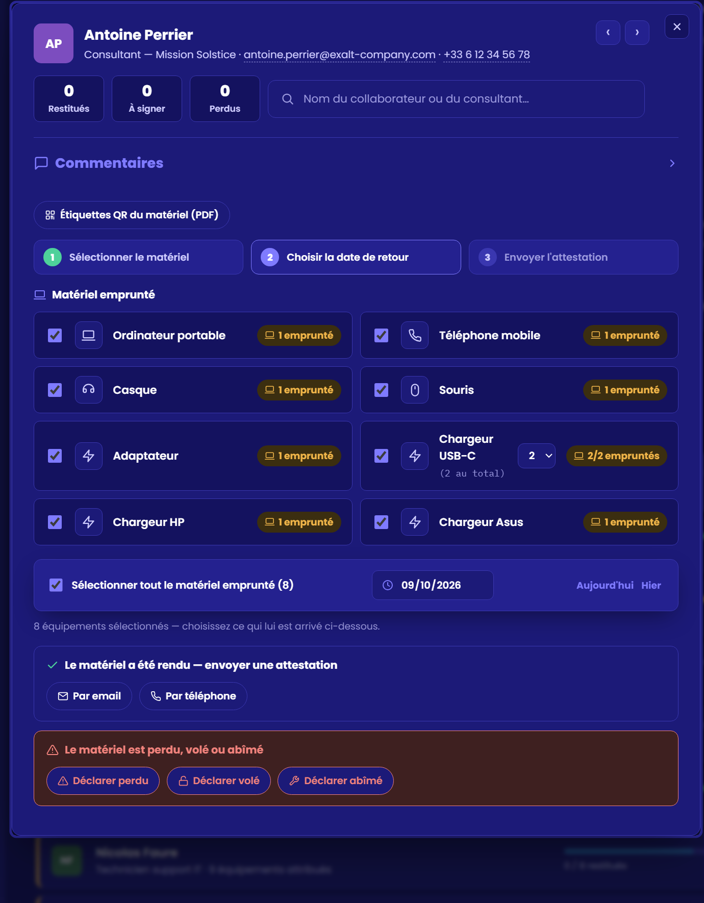
Figure 5 — Fiche d'une personne dans l'onglet Restituer (étapes, matériel sélectionné, date de retour, actions)
Bouton
Comportement
Par email
Ouvre d'abord l'aperçu du PDF (§ 4.6), où l'on choisit le destinataire : l'adresse enregistrée ou une autre adresse saisie à la main (§ 4.13). Après Continuer et envoyer, l'attestation est enregistrée au statut En attente et un brouillon Outlook est créé dans la boîte de l'utilisateur, adressé au destinataire choisi, avec le PDF en pièce jointe. La fenêtre « Message prêt à envoyer » indique où le trouver et propose de télécharger le message pour Outlook (§ 4.13).
Par téléphone
Enregistre l'attestation et ouvre l'application SMS avec le texte préparé. Tant que le numéro de test est actif, le SMS est adressé à 06 95 17 58 74.
Déclarer perduDéclarer voléDéclarer abîmé
Demande une confirmation (déclaration irréversible), puis enregistre la déclaration (motif, date, auteur). L'équipement sort de « chez la personne » et apparaît dans Matériel perdu.
Contrôles : seuls les équipements empruntés et non déjà couverts par une attestation en attente sont sélectionnables ; la date de retour est choisie avant l'envoi.
4.4 Attestations
Objectif : suivre toutes les attestations envoyées et leur statut.
Figure 6 — Onglet Attestations : indicateurs, filtres, cycle de vie de chaque attestation
Élément
Comportement
Indicateurs
Attestations envoyées (avec le taux de signature) · En attente de signature · À relancer · Délai moyen de signature. Chaque indicateur applique son filtre ; l'indicateur actif est entouré.
Filtres
ToutesEn attenteÀ relancerSignéesPar emailPar téléphone ; filtre de période sur la date d'envoi ; recherche par nom, équipement, email ou téléphone ; tri : en attente d'abord (défaut), plus récentes, plus anciennes, nom A→Z (l'export CSV suit l'ordre choisi).
Ligne d'attestation
Avatar, personne et fonction, matériel, canal (email ou téléphone), dates d'envoi et de retour, auteurs, mention écrite éventuelle (§ 4.5) et cycle de vie : Envoyée → Signée → PDF archivé (survol : date ou état de chaque étape).
Rapport
En haut à droite : rapport PDF ou Excel des attestations (à traiter, envoyées, signées de la période), § 4.16.
Sélection multiple
Une case par ligne et la case « Sélectionner toutes les attestations en attente de cette liste » : une barre d'actions permet de les marquer toutes comme signées ou d'exporter la sélection (§ 4.22).
En attente · N j
Nombre de jours depuis l'envoi. Rouge à partir de 3 jours (réglage REMINDER_AFTER_DAYS) : l'attestation entre dans « À relancer ».
Marquer comme signée
Voir 4.5.
PDF
Télécharge le PDF : la version archivée pour une attestation signée, la version « émise » sinon.
Exporter CSV
Exporte les lignes affichées, filtres et recherche appliqués (colonnes en annexe A).
Relancer
Bouton masqué par défaut (réglage SHOW_REMIND_BUTTON, § 9.3). Une fois affiché, il prépare un rappel par le canal de l'envoi initial (Outlook ou SMS) et le trace. Le suivi des retards reste assuré par le filtre « À relancer » et par l'Accueil.
4.5 Marquer comme signée
Objectif : enregistrer la signature d'une attestation, produire le PDF signé et l'archiver.
Clic sur Marquer comme signée (onglet Attestations ou fiche de la personne).
La fenêtre demande :
la date de signature : aujourd'hui par défaut, modifiable, jamais dans le futur ;
la signature : tracée au doigt, au stylet ou à la souris ; Effacer recommence ;
une mention écrite (140 caractères) : par exemple « Je signe à la place de Camille Dubois ». Le lien Signer à la place de… pré-remplit « Signé par … à la place de [nom] » ;
un tracé ou une mention est obligatoire : tant que ni l'un ni l'autre n'est renseigné, le bouton Valider la signature est grisé et un message l'explique. Un simple clic dans le cadre ne compte pas, et la mention pré-remplie doit être complétée (remplacer les points de suspension par le nom du signataire).
Après Valider la signature, l'application :
génère le PDF signé (§ 4.6) et l'archive (§ 4.7) ;
passe l'attestation à Signée et enregistre l'auteur de la validation, la date et la mention ;
libère les équipements, qui redeviennent disponibles ;
propose d'envoyer l'attestation signée par email au collaborateur (§ 4.20).
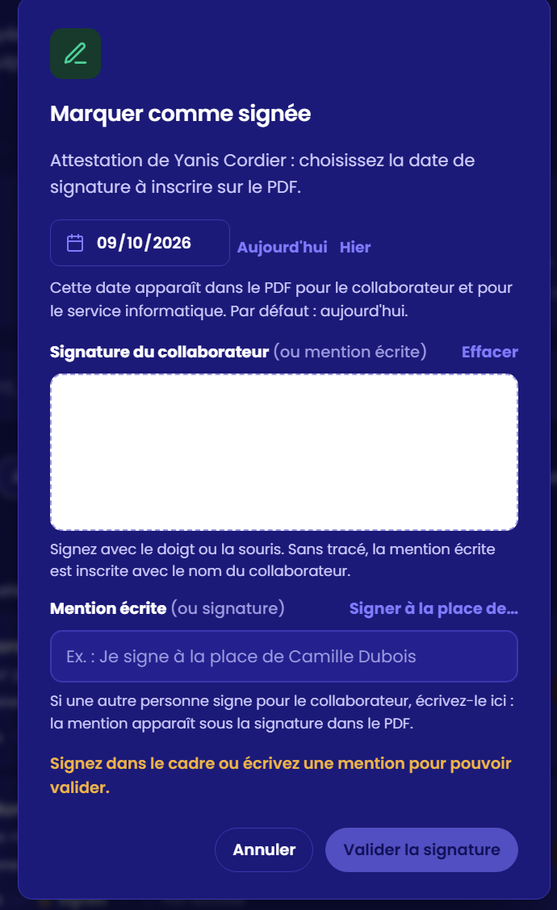
Figure 7 — Date, signature ou mention : le bouton reste grisé tant que l'une des deux manque
Annuler une signatureLe message de confirmation propose Annuler pendant 10 secondes au moins : l'attestation redevient « En attente », l'archive PDF et la mention sont supprimées. L'annulation est refusée si une autre action a été enregistrée depuis pour la même personne. Passé ce délai, la correction passe par l'administrateur.
Cas particuliersSi l'archivage échoue, la signature est quand même enregistrée ; le bouton « Archiver le PDF » permet de recommencer. Si la date choisie n'est pas celle du jour, la date et l'heure réelles du clic sont conservées à part (signedRecordedAt) et mentionnées dans le PDF. Si la signature tracée rend le PDF trop lourd pour la base (plus de 256 Ko), elle est remplacée par le nom du collaborateur.
4.6 Le PDF d'attestation et son aperçu
Le PDF est créé dans le navigateur (A4, une page) : aucun document n'est fabriqué par un serveur tiers. Il porte la référence ATT-<n° personne>-<n° attestation>.
Texte d'attestation, tableau du matériel (désignation, quantité) et total d'unités.
Bloc de suivi : dates d'emprunt et de restitution, envoi (canal, date, auteur), signature, et mention de signature si elle existe.
Deux cases de signature, toujours remplies : date, puis signature tracée ou nom du collaborateur ; même date et « DSI » côté service informatique. La mention écrite figure aussi sous la case du collaborateur.
Deux versions
Version
Quand
Date
Émise
À l'envoi, ou PDF d'une attestation en attente
Date d'envoi
Signée
Après la signature
Date de signature
Nom de fichier : attestation_restitution_prenom-nom_ATT-3-5_signee.pdf ; le suffixe _signee n'existe que pour la version signée.
Aperçu avant envoi
Avant d'envoyer une attestation par email, une fenêtre affiche le PDF tel qu'il sera joint. Continuer et envoyer enregistre et prépare le message ; Retour ne change rien. L'aperçu utilise la bibliothèque pdf.js, chargée à la demande ; s'il est indisponible, l'envoi reste possible et le PDF est créé normalement.
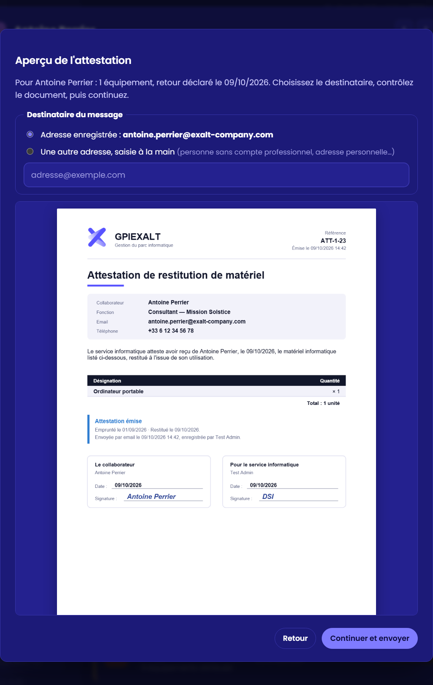
Figure 9 — Aperçu du PDF avant l'envoi par email
4.7 Archives PDF
Objectif : retrouver à tout moment le PDF signé d'une attestation, pour un contrôle ou un litige.
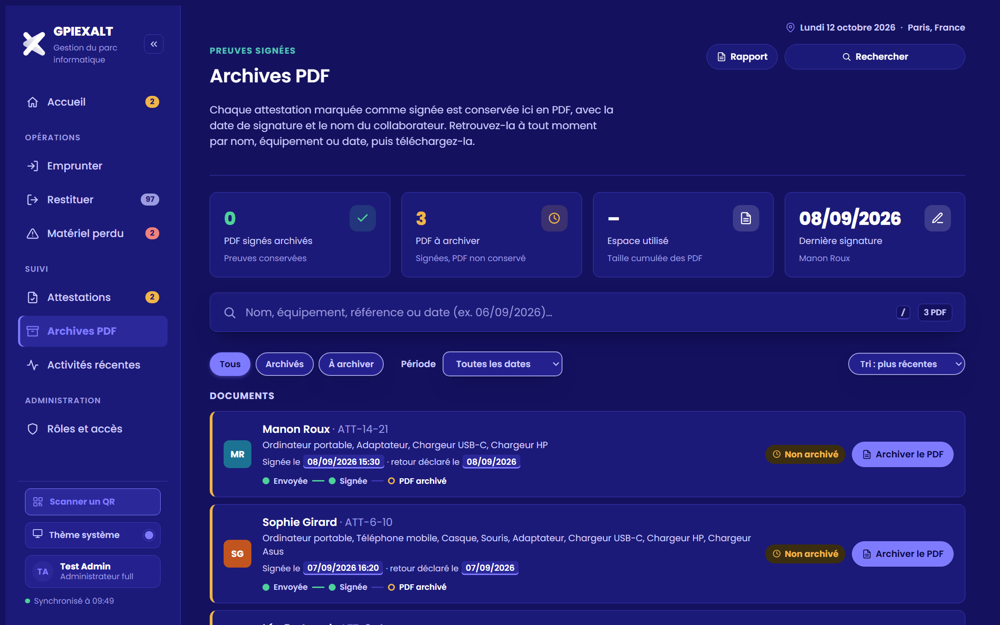
Figure 10 — Onglet Archives PDF : documents archivés et à archiver
Élément
Comportement
Indicateurs
PDF signés archivés · PDF à archiver · Espace utilisé (taille cumulée) · Dernière signature (date et personne).
Liste
Une ligne par attestation signée, la plus récente en premier : personne, référence, matériel, date de signature, personne ayant validé, taille, mention écrite éventuelle, cycle de vie.
Recherche et filtres
Par nom, matériel, référence (ATT-…) ou date. TousArchivésÀ archiver ; filtre de période sur la date de signature ; tri : plus récentes (défaut), plus anciennes, nom A→Z.
Télécharger
Restitue exactement le PDF produit au moment de la signature (le fichier stocké, pas une recréation).
Rapport
En haut à droite : rapport des archives PDF (PDF signés à archiver, signatures de la période avec l'état de l'archive), § 4.16.
Archiver le PDF
Crée et range le PDF d'une attestation signée qui n'a pas d'archive (signature antérieure aux archives, ou archivage échoué).
4.8 Matériel perdu
Objectif : avoir une vue consolidée des équipements perdus, volés ou abîmés.
Figure 11 — Onglet Matériel perdu
Indicateurs : unités perdues, volées ou abîmées · déclarations · type le plus touché · unités déclarées ce mois-ci. Les deux premiers suivent le filtre choisi.
Filtres : liste déroulante « Type de matériel » et « Période » sur la même ligne ; recherche par matériel ou par personne.
Liste par type : jauge « part des pertes », total, et une pastille par déclaration (personne, quantité, motif, date). Au-delà de six, le lien « + N autres » déplie la suite. L'auteur de la déclaration apparaît au survol de la pastille.
Exporter CSV : lignes affichées (colonnes en annexe A).
Rapport (en haut à droite) : rapport du matériel perdu, pertes par type et déclarations de la période (§ 4.16).
4.9 Activités récentes
Objectif : retrouver tout ce qui a été enregistré, du plus récent au plus ancien.
Figure 12 — Onglet Activités récentes : journal groupé par jour
Quatre indicateurs cliquables (prêts, attestations envoyées, signatures, pertes) qui servent aussi de filtres ; un second clic retire le filtre.
Journal groupé par jour (« Aujourd'hui », « Hier », puis la date complète) : chaque événement indique la personne, le matériel, l'heure et l'auteur. La mention de signature figure sous l'événement « attestation signée ».
Recherche par personne, équipement ou type d'action ; filtre de période ; 50 événements affichés à la fois.
4.10 Filtrer par période
Chaque onglet de liste propose un filtre Période, à côté des autres filtres.
Figure 13 — Filtre de période en mode « Entre deux dates »
Mode
Comportement
Toutes les dates
Aucun filtre (par défaut).
Entre deux dates
« du JJ/MM/AAAA au JJ/MM/AAAA », bornes comprises.
De mois à mois
Du premier jour du premier mois au dernier jour du second.
D'année à année
De l'année de début à l'année de fin comprise.
Onglet
Date utilisée pour le filtre
Emprunter
Date de remise de l'emprunt
Restituer et Matériel perdu
Date de retour ou date de la déclaration
Attestations
Date d'envoi
Archives PDF
Date de signature
Activités récentes
Date de l'événement
Le bouton Réinitialiser apparaît dès qu'un filtre est actif. Les indicateurs et compteurs de l'onglet suivent la période choisie.
4.11 Codes QR et scanner
Objectif : retrouver un équipement en quelques secondes, et l'identifier physiquement.
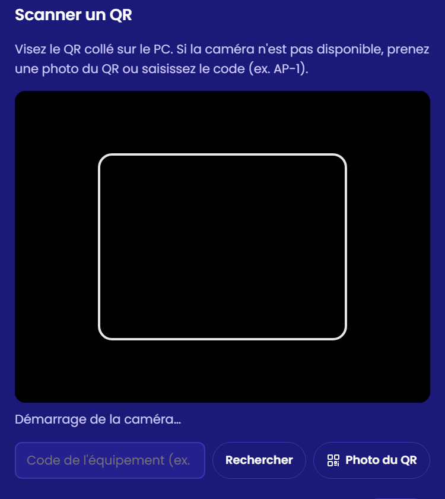
Figure 14 — Scanner un QR : caméra, photo du QR ou saisie du code
Fonction
Comportement
Étiquettes QR du matériel (PDF)
Dans la fiche d'une personne (Emprunter ou Restituer) : génère un PDF A4 de 24 étiquettes par page (3 × 8), prêtes à imprimer et coller sur le matériel. Chaque étiquette porte le QR, le libellé, le code (par exemple AP-1), le nom de la personne et la date.
Scanner un QR
Bouton en bas du menu latéral (aussi sur l'Accueil). Trois façons d'identifier un équipement : la caméra de l'appareil, une photo du QR, ou la saisie du code (ex. AP-1 ou numéro de série).
Résultat
L'équipement, la personne concernée et son état : disponible, emprunté chez la personne, restitution en attente de signature, ou déclaré perdu, volé ou abîmé ; boutons Prêter maintenant (équipement disponible) ou Restituer ce matériel (équipement emprunté), Ouvrir la fiche et Scanner un autre QR : le scan rapide est décrit au § 4.23.
Les bibliothèques de lecture (jsQR) et de dessin des codes (qrcode-generator) sont chargées à la demande depuis un CDN (§ 7.1).
4.12 Fiche personne et commentaires
La fiche s'ouvre dans une fenêtre (dans un panneau à droite de la liste sur un écran de 1 480 px ou plus, § 4.23) ; fermeture par la croix, Échap ou un clic à côté. Un clic sur l'email ou le téléphone le copie.
Elle affiche les compteurs (restitués, à signer, perdus), le matériel et les historiques, avec l'auteur de chaque action (« enregistrée par vous »).
Commentaires : fil horodaté propre à chaque personne ; chaque message porte son auteur, la date et l'heure ; chacun peut modifier ses propres commentaires ; un brouillon en cours n'est jamais effacé.
Recherche d'une autre personne : le champ en haut de la fiche (nom, fonction, email ou code d'équipement) propose jusqu'à 8 personnes ; un clic ouvre la fiche choisie dans le même onglet, avec une confirmation si du matériel coché n'est pas enregistré. Échap vide le champ.
Figure 15 — Fiche d'une personne : compteurs et recherche d'une autre personne
4.13 Envoi des messages : Outlook et SMS
Une page publiée dans Claude ne peut ni ouvrir directement Outlook ni envoyer de SMS : l'application passe par le connecteur Microsoft 365 (brouillon ou envoi depuis la boîte de l'utilisateur) et par les applications de l'appareil.
Situation
Résultat
Connecteur « MS 365 » connecté et autorisé
Brouillon Outlook créé dans la boîte de l'utilisateur, adressé au destinataire choisi (voir ci-dessous), avec l'attestation PDF jointe. La fenêtre Message prêt à envoyer indique où le trouver (dossier Brouillons) et propose de télécharger le message (.eml) à ouvrir dans Outlook, ou de copier le lien du brouillon. Rien n'est envoyé avant le clic sur Envoyer dans Outlook.
Connecteur absent, expiré, refusé
La même fenêtre propose le fichier .eml (message adressé, PDF joint) et indique la raison de l'échec.
Page ouverte hors de Claude
Pas de connecteur : la messagerie par défaut s'ouvre sur le message préparé et le PDF est téléchargé pour être joint.
Pourquoi Outlook ne s'ouvre pas tout seul
Outlook sur le web refuse de s'afficher dans une fenêtre ouverte depuis une page publiée dans Claude (le navigateur affiche « ERR_BLOCKED_BY_RESPONSE »). L'application n'essaie donc plus cette ouverture : elle dépose le message en brouillon et propose le fichier .eml.
SMS
Ouvre l'application de messages avec le texte prêt, vers le numéro de test SMS_TEST_NUMBER (06 95 17 58 74).
Choisir le destinataire de l'attestation de restitution
Dans l'aperçu qui précède l'envoi (§ 4.6), le bloc Destinataire du message propose deux choix :
Adresse enregistrée : celle de la fiche (annuaire Microsoft 365), cochée par défaut ;
Une autre adresse, saisie à la main : pour une personne sans compte professionnel (adresse personnelle ou externe). Une adresse vide ou invalide est refusée ; le choix est automatique si la fiche n'a aucune adresse.
L'adresse choisie est conservée avec l'attestation (mailTo) : elle sert au brouillon Outlook, au message de repli (.eml ou messagerie), à la relance et au message d'attestation signée (§ 4.20) ; l'historique indique « Envoyée par email à … ».
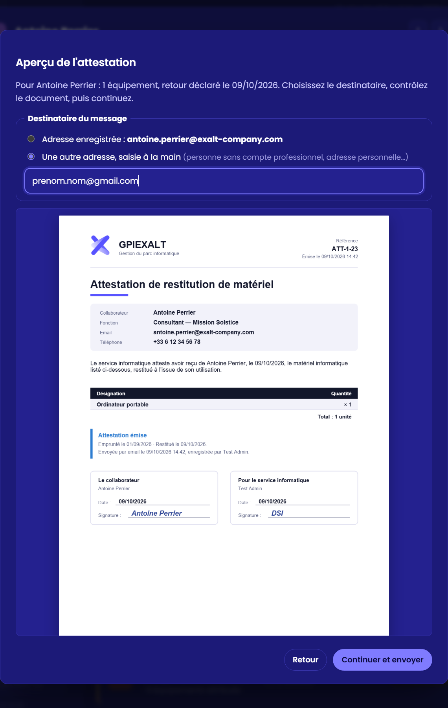
Figure 16 — Aperçu de l'attestation : choix du destinataire, adresse saisie à la main
Point de vigilanceLa création du brouillon et l'envoi ont été testés avec un connecteur simulé ; le premier essai réel avec un compte Microsoft 365 doit être contrôlé (cas CR-12 et CR-37 du plan de recette). Pour l'attestation signée, voir le § 4.20.
4.14 Apparence : thèmes et couleurs
Le bouton en bas du menu latéral (« Thème système » par défaut) ouvre le panneau Apparence.
Système (suit l'appareil) · Clair · Sombre · Minuit · Ardoise · Noir · Océan · Forêt · Crème · Contraste (noir sur blanc, pour un confort de lecture maximal) · eXalt (clair) · eXalt nuit (fond bleu profond).
Couleur d'accent
Orange (défaut) · Bleu · Violet · Turquoise · Rose · Graphite · eXalt (bleu de la charte, #5853FF). Appliquée aux boutons, filtres actifs, liens et menu sélectionné.
Les thèmes eXalt appliquent la charte de l'entreprise : bleu eXalt, police Poppins et symbole eXalt (menu et PDF d'attestation) ; choisir l'un d'eux sélectionne aussi la couleur d'accent eXalt. Les captures de ce dossier sont en thème « eXalt nuit ».
Le choix est mémorisé dans le navigateur de chaque personne : il n'est ni partagé entre collègues ni synchronisé entre appareils. Le rouge et le vert ne sont pas proposés comme accents, car ils signalent « perdu » et « signé ».
4.15 Recherche rapide et raccourcis
Objectif : trouver une personne, un équipement ou une page sans parcourir les listes.
Élément
Comportement
Rechercher
Bouton visible en haut de chaque page (en premier sur l'Accueil). Raccourci : Ctrl K.
Liste de départ (champ vide)
À traiter : jusqu'à quatre lignes chiffrées (retours en retard, attestations à relancer ou en attente, PDF à archiver, matériel à restituer), un clic ouvre la page déjà filtrée · Activité récente : les quatre dernières personnes dont la fiche a bougé · Aller à (sept onglets) · Actions.
Personnes
Une seule ligne par personne : avatar, fonction et repère (« En retard », « 8 à rendre », « Signature en attente »). Entrée ouvre l'action la plus utile (Restituer s'il y a du matériel à rendre ou une attestation en attente, sinon Emprunter) ; Maj + Entrée ouvre l'autre ; deux boutons cliquables apparaissent sur la ligne active.
Équipement
Un code (ex. AP-1) ou un numéro de série affiche l'équipement, son état et ouvre la fiche de la personne (Restituer s'il est emprunté, Emprunter sinon).
Pages et actions
Les sept onglets, Scanner un QR, Apparence, Raccourcis clavier, Visite guidée, Générer un rapport, et Rôles et accès pour un administrateur.
Confort
Texte cherché surligné (sans tenir compte des accents), titres de groupes qui restent visibles, survol qui suit la ligne active, plein écran sur téléphone.
Clavier
↑ ↓ pour parcourir, Entrée pour ouvrir, Maj + Entrée pour l'autre action, Échap, la croix ou un clic à côté pour fermer.
Figure 18 — Recherche rapide : liste de départ (À traiter, Activité récente, Aller à)Figure 19 — Résultats pour « bert » : une ligne par personne, texte surligné
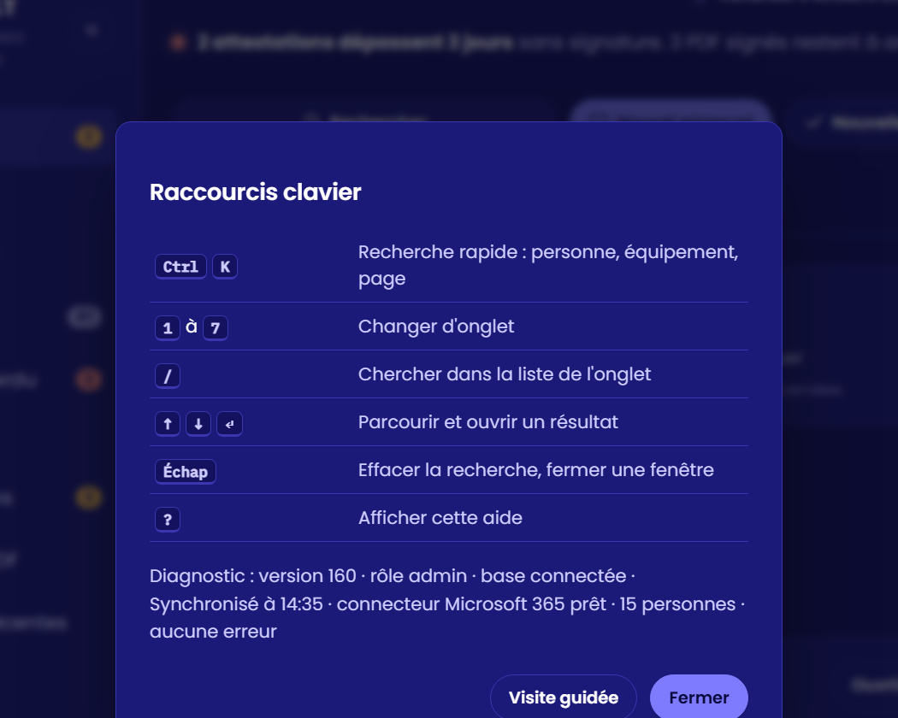
Figure 20 — Aide clavier (touche ?)
Raccourci
Action
Ctrl K
Recherche rapide
Maj + Entrée
Dans la recherche rapide : l'autre action sur une personne
1 à 7
Changer d'onglet
/
Chercher dans la liste de l'onglet
Alt ←Alt →
Personne précédente ou suivante dans une fiche
Échap
Effacer la recherche, fermer une fenêtre
?
Afficher l'aide clavier
4.16 Rapports PDF et Excel
Objectif : produire en un clic un état à partager (direction, audit), propre à la page où l'on se trouve : chaque page propose son rapport.
Cliquer sur Rapport, en haut à droite de la page voulue, à côté de Rechercher : Accueil, Emprunter, Restituer, Attestations, Archives PDF ou Matériel perdu (la recherche rapide, « Générer un rapport », prend la page affichée).
Choisir la période d'activité : toutes les dates, ce mois-ci, mois précédent, cette année, ou entre deux dates. La situation du parc est toujours celle du jour.
Choisir le format : deux cartes, PDF (à lire, imprimer ou envoyer) ou Excel (tableaux à filtrer) ; le dernier choix est mémorisé.
Cliquer sur Générer le rapport, puis confirmer le téléchargement ; ou sur Envoyer par email (voir ci-dessous). Un indicateur tourne pendant la préparation.
Nom des fichiers : rapport_gpiexalt_<page>_AAAA-MM-JJ.pdf ou .xlsx, où <page> vaut emprunts, restitutions, attestations, archives ou perdu (l'Accueil produit rapport_gpiexalt_AAAA-MM-JJ). Les rapports sont créés dans le navigateur (bibliothèques jsPDF et autotable pour le PDF, ExcelJS pour Excel, chargées à la demande).
DroitsLes rapports et les exports CSV sont réservés aux rôles Administrateur full, Super utilisateur et Lecteur ; ils sont masqués pour un Agent IT et absents de la vue d'un collaborateur.
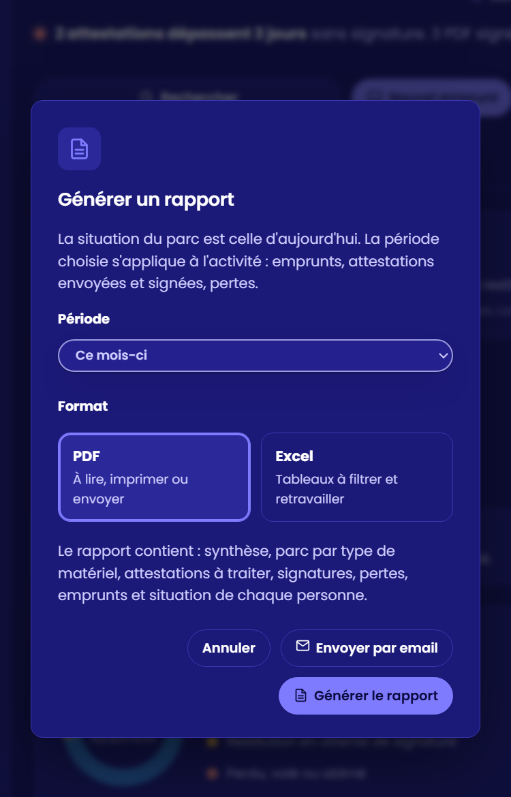
Figure 21 — Fenêtre « Générer un rapport » (Accueil) : période, format, envoi par email
Contenu du PDF (rapport complet de l'Accueil)
Bandeau d'en-tête : date de génération, auteur, période.
Trois lignes d'indicateurs : situation du parc, attestations, activité sur la période.
Parc par type de matériel avec barre de répartition.
Attestations à traiter (les plus anciennes d'abord, « À relancer » en rouge), signatures, pertes et emprunts de la période.
Situation de chaque personne ; pied de page numéroté.
Classeur Excel (rapport complet : 8 feuilles)
Synthèse · Par type · À traiter · Attestations · Signatures · Pertes · Emprunts · Par personne. En-têtes colorés, première ligne figée, filtres sur chaque colonne, largeurs adaptées.
Figure 22 — Première page d'un rapport PDF
Le rapport selon la page
Page
Contenu du rapport
Accueil
Rapport complet : parc par type, attestations à traiter, signatures, pertes, emprunts, situation de chaque personne.
Emprunter
Indicateurs de remise, emprunts de la période avec leur retour prévu et son état (rendu, dans N j, en retard), matériel à remettre par personne.
Restituer
Indicateurs, retours en retard, retours prévus par échéance, parc par type, situation de chaque personne.
Attestations
Indicateurs, attestations à traiter, envoyées et signées de la période.
Archives PDF
Indicateurs, PDF signés à archiver, signatures de la période avec l'état de l'archive.
Matériel perdu
Indicateurs, pertes par type, déclarations de la période (matériel, personne, motif, date).
La fenêtre reprend le titre de la page (« Rapport des archives PDF ») et décrit son contenu ; la période s'applique à l'activité de la page, les situations (parc, attestations en attente) sont celles d'aujourd'hui. Le classeur Excel contient les feuilles correspondantes (par exemple « Retours en retard » et « Retours prévus » pour Restituer).
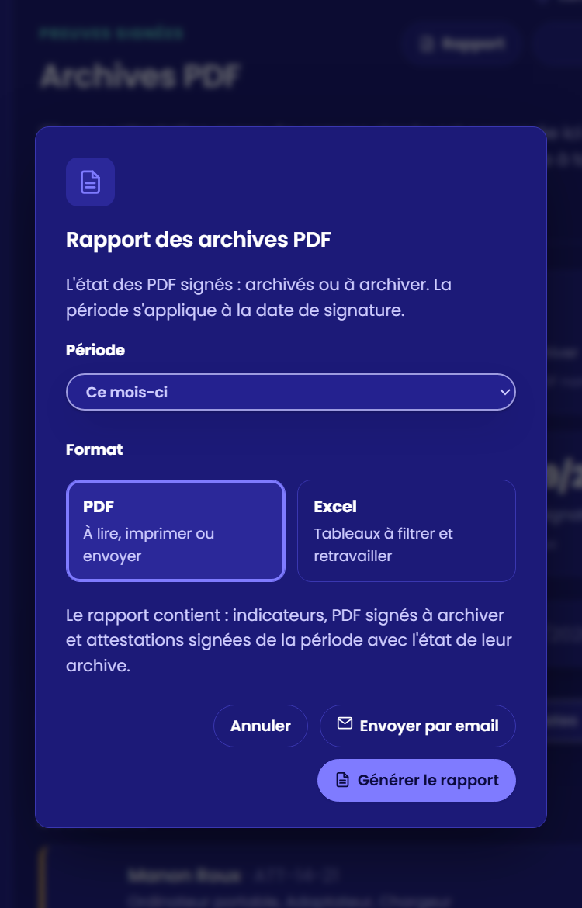
Figure 23 — Fenêtre du rapport d'une page (Archives PDF)Figure 24 — Rapport des restitutions : retours en retard et retours prévus
Envoyer le rapport par email
Le bouton Envoyer par email ouvre une fenêtre (la période et le format choisis sont repris) :
Destinataire(s) : champ vide, à saisir à la main (jusqu'à 10 adresses séparées par une virgule). Dès 2 lettres d'un nom, une liste de suggestions apparaît : personnes de GPIEXALT, puis comptes de l'annuaire Microsoft 365 ; flèches et Entrée (ou Tab), ou clic, pour choisir.
Objet et message préremplis (date, format, période, nom de l'expéditeur), modifiables. Le sujet reprend le titre de la page (« Rapport du matériel perdu du JJ/MM/AAAA ») et la pièce jointe est indiquée (rapport_gpiexalt_<page>_AAAA-MM-JJ.pdf ou .xlsx).
Envoyer maintenant : le message part de la boîte Outlook de l'utilisateur et reste dans les éléments envoyés ; Créer un brouillon : le message est déposé dans les Brouillons ; Télécharger le message : fichier .eml à ouvrir dans Outlook (seul choix sans connecteur) ; Annuler : retour à la fenêtre du rapport.
Une adresse vide ou invalide est refusée. Au-delà de 2,9 Mo, l'envoi direct est refusé (limite de Microsoft Graph) : télécharger le rapport et le joindre à un message. Rien ne part sans le clic sur « Envoyer maintenant ».
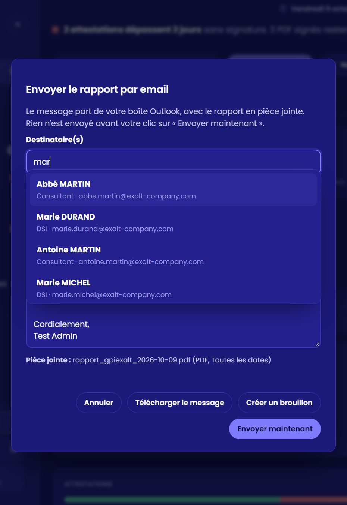
Figure 25 — Envoi du rapport par email : suggestions de destinataires
4.17 Rôles et accès, vue « Mon matériel »
Objectif : donner à chacun les droits qui correspondent à sa fonction, et permettre aux collaborateurs de consulter leur propre matériel.
Deux niveaux complémentaires
Le partage de la page (menu Partager) décide qui peut ouvrir l'application et avec quel niveau : « Peut consulter », « Peut interagir » ou « Peut modifier ». C'est la limite appliquée par la plateforme.
Le rôle précise ce que l'application affiche et autorise. Il s'attribue dans l'écran « Rôles et accès » (menu, section Administration), réservé aux administrateurs.
Rôle
Ce que la personne voit et fait
Partage requis
Garantie
Administrateur full
Tout, y compris « Rôles et accès ».
Peut modifier
Plateforme
Super utilisateur
Toutes les opérations (prêts, restitutions, signatures, pertes), rapports PDF et Excel, exports. Rôle par défaut d'une personne qui peut interagir.
Peut interagir
Affichage
Agent IT
Opérations courantes : prêts, restitutions, attestations, signatures. Ni déclaration de perte, ni rapports, ni exports.
Peut interagir
Affichage
Lecteur
Tous les écrans et les rapports, sans aucune saisie.
Peut interagir
Affichage
Collaborateur
Uniquement « Mon matériel », en consultation seule.
Peut consulter
Plateforme
Une pastille en bas du menu rappelle le nom et le rôle de la personne connectée (photo ou initiales).
Attribuer un accès
Partager la page avec la personne, au niveau indiqué ci-dessus.
Ouvrir Rôles et accès, chercher la personne par prénom et nom (ou email) : « Marie Dupont », « Dupont Marie » ou le début des mots (« mar dup ») trouvent la même personne ; les résultats affichent le nom complet, mots tapés surlignés (12 au plus). Choisir son rôle.
Pour un collaborateur, la fiche est retrouvée automatiquement (nom identique) ; le choix manuel n'apparaît qu'en cas d'échec. Enregistrer.
Tous les utilisateurs : cette option rattache d'un coup chaque fiche au compte correspondant (adresse email, puis nom exact). Elle ne modifie jamais un rôle attribué à la main et peut être relancée pour les nouvelles fiches ; un bilan liste les fiches sans compte trouvé.
Personne introuvable : elle ouvre l'application ; son écran « Compte non rattaché » affiche un identifiant à copier, que l'administrateur colle dans le champ de recherche.
Figure 26 — Écran « Rôles et accès » : recherche par prénom et nom
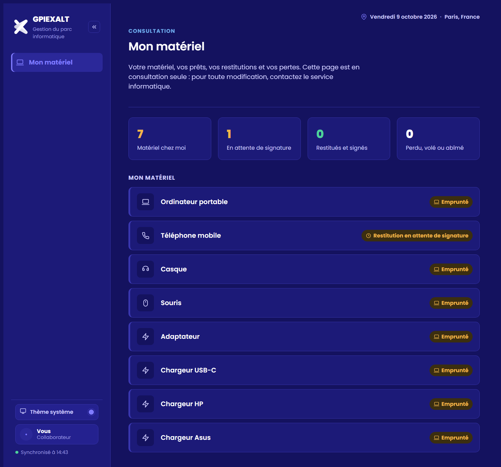
Figure 27 — Vue « Mon matériel » d'un collaborateur
La vue « Mon matériel »
Quatre indicateurs : matériel chez moi, en attente de signature, restitués et signés, perdu, volé ou abîmé.
Liste du matériel avec son état, mes attestations, mes prêts, mes pertes déclarées.
Aucune saisie ni signature : pour toute modification, contacter le service informatique.
Un compte non rattaché voit le message « Compte non rattaché » et son identifiant à communiquer.
Protection des données
Chemin dans la base
Contenu
Lecture · écriture
people, documents
Fiches, historiques, PDF signés.
Interagir · interagir
roles/<compte>
Rôle et fiche rattachée de chaque personne.
Administrateur · administrateur (chacun lit le sien)
links/<fiche>
Compte rattaché à une fiche.
Interagir · administrateur
mine/<compte>
Résumé personnel d'un collaborateur, tenu à jour à chaque action sur sa fiche.
LimitesLes rôles Agent IT et Lecteur sont des restrictions d'affichage : seul « Peut consulter » interdit techniquement toute écriture. La recherche de personnes ne trouve que les membres de l'organisation qui ont un compte Claude (12 résultats au plus ; le moteur de recherche est celui de la plateforme). Tant que l'annuaire n'est pas importé (§ 4.19), 15 personnes de démonstration sont proposées. La sécurité complète pour tous les collaborateurs passera par Entra ID et SharePoint (§ 11).
4.18 Confort d'utilisation
Fonction
Comportement
Recherche collante
Le champ de recherche reste visible en haut pendant le défilement ; un bouton « effacer » apparaît dès qu'il y a du texte.
Saisie directe
Un clic de souris sur un onglet de liste place le curseur dans la recherche (les raccourcis 1 à 7 gardent leur effet).
Filtres actifs
Une pastille « N filtres actifs · Réinitialiser » s'affiche au-dessus de chaque liste ; un bouton de réinitialisation apparaît aussi dans les états vides.
Fiche précédente / suivante
Flèches à côté de la croix, ou Alt ← / Alt → : on traite plusieurs personnes à la suite sans fermer la fiche.
Sélection non enregistrée
Fermer la fiche ou changer de personne avec du matériel coché demande une confirmation.
Dates rapides
Liens « Aujourd'hui » et « Hier » sous les champs de date (remise, retour, signature).
Messages
Les erreurs et refus s’affichent avec une icône d’alerte et un liseré rouge.
Choix « Confortable » ou « Compacte » dans le panneau Apparence : la version compacte affiche davantage de lignes à l'écran ; préférence propre au navigateur.
Date et lieu
En haut à droite de chaque page : jour, date, ville et pays. Lieu déduit du fuseau horaire du navigateur (aucune géolocalisation), modifiable par LOCATION_OVERRIDE.
Chargement
Une fine barre de progression défile en haut de l’écran pendant le chargement et la création d’un rapport ; les chiffres des indicateurs s’animent à leur apparition.
Enregistrer sans sélection
Le bouton « Enregistrer » d'un emprunt reste cliquable : sans équipement coché, un message demande de cocher le matériel et la phrase d'aide se met en évidence.
Enregistrement en cours
Le bouton affiche un indicateur ; un second clic affiche « Enregistrement en cours » au lieu de créer un doublon.
Erreur d'enregistrement
Un message rouge « Enregistrement impossible : … » donne la raison ; la modification n'est pas conservée.
Diagnostic
L'aide (touche ?) affiche la version, le rôle, l'état de la base et du connecteur, le nombre de personnes et les dernières erreurs.
Liste vide
Attestations sans aucune attestation : le message explique comment en créer une et propose « Aller à Restituer ».
Visite guidée
Six étapes proposées à la première ouverture (menu, recherche, indicateurs, apparence) ; à relancer depuis l’aide (?) ou la recherche rapide.
Impression
Un onglet s’imprime en noir sur blanc, sans menu ni boutons.
Accessibilité
Focus géré dans les fenêtres, messages annoncés aux lecteurs d’écran, animations réduites si le système le demande.
4.19 Annuaire Microsoft 365 : importer les utilisateurs
Objectif : proposer dans Emprunter et Restituer les collaborateurs réels de l'organisation (comptes Entra ID) à la place des 15 personnes de démonstration. Fonction réservée aux administrateurs, dans l'écran « Rôles et accès ».
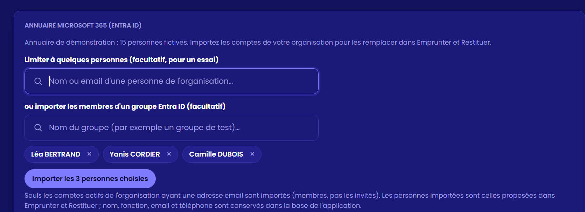
Figure 29 — Carte « Annuaire Microsoft 365 (Entra ID) » : recherche de personnes et de groupe, pastilles, bouton d'import
Mode d'import
Comportement
Tout l'annuaire
Bouton Importer tout l'annuaire (puis « Synchroniser tout l'annuaire »). Lit les comptes actifs, de type membre (pas les invités), ayant une adresse email. Le connecteur lisant 999 comptes au plus à la fois, l'application lit par tranches (première lettre de l'identifiant) au-delà.
Quelques personnes (essai)
Champ « Limiter à quelques personnes » : recherche par nom ou email (8 résultats). Chaque choix devient une pastille ; le bouton devient Importer les N personnes choisies.
Un groupe Entra ID
Champ « ou importer les membres d'un groupe » : recherche du groupe par nom ; le bouton devient Importer le groupe « … ». Les membres actifs avec email, hors invités, sont importés. Limite : moins de 999 membres ; au-delà (par exemple le groupe « Tous les utilisateurs »), l'application refuse et propose un groupe plus petit ou l'import de tout l'annuaire.
Après l'import
Une fenêtre de confirmation résume ce qui va être importé (nombre, noms pour une sélection, personnes déjà importées qui ne seront plus proposées).
Données copiées depuis Entra ID : nom, fonction (ou service à défaut), email, mobile. Rien n'est écrit dans Entra ID : l'import est une lecture.
Chaque personne reçoit le kit standard de 9 équipements, sans emprunt, et un code d'équipement dérivé de ses initiales (AD, AD2, …). Le code et le numéro de la personne restent stables d'une synchronisation à l'autre.
Synchroniser à nouveau ajoute les arrivées ; les emprunts déjà enregistrés sont conservés. Un compte retiré de l'annuaire reste listé avec la mention « compte retiré de l'annuaire » : un départ avec du matériel encore dehors doit pouvoir être restitué.
En mode sélection ou groupe, les autres personnes déjà importées ne sont plus proposées ; leurs données, comme celles de la démonstration, restent dans la base.
LimitesLe parc réel n'est pas importé : le connecteur Microsoft 365 ne donne pas accès à Intune ; le matériel de chaque personne est un kit standard. L'annuaire importé contient des données personnelles de collaborateurs, lisibles par toute personne qui peut utiliser la page (§ 7.4) : à valider avec le DPO avant un import complet. Seule l'interface réserve l'import aux administrateurs (§ 7.3). Le rattachement des comptes collaborateurs à leur fiche reste celui du § 4.17.
4.20 Envoyer l'attestation signée par email
Objectif : envoyer au collaborateur, juste après la signature, un message avec l'attestation signée en pièce jointe.
Valider la signature (§ 4.5) ; la signature est enregistrée et le PDF archivé.
La fenêtre « Envoyer l'attestation signée ? » s'ouvre (connecteur Microsoft 365 autorisé et adresse email connue). Elle montre le destinataire, l'objet, le nom du PDF joint et le texte.
Choisir :
Envoyer maintenant : le message part de la boîte Outlook de l'utilisateur, avec le PDF signé, et est copié dans les éléments envoyés ; la date d'envoi est enregistrée sur l'attestation (signedMailAt) ;
Modifier : l'objet et le texte deviennent modifiables (ils ne peuvent pas être vides) ; le destinataire et le PDF ne se modifient pas ici ; Terminer la modification remet l'aperçu à jour ;
Créer un brouillon : le message (modifié le cas échéant) est déposé dans le dossier Brouillons d'Outlook ; la fenêtre « Message prêt à envoyer » propose le fichier .eml et le lien du brouillon (§ 4.13) ;
Ne pas envoyer : la signature reste enregistrée, aucun message ne part.
La fenêtre « Message prêt à envoyer » propose le fichier .eml (message adressé, PDF signé joint) à ouvrir dans Outlook.
Envoi impossible
La fenêtre reste ouverte avec la raison ; l'utilisateur peut créer un brouillon à la place.
Collaborateur sans adresse email
Aucune proposition d'envoi.
Annuler la signature
Le bouton Annuler du message de confirmation n'annule pas un message déjà envoyé.
Point de vigilanceLe destinataire est l'adresse de l'annuaire, ou celle saisie à la main lors de l'envoi de l'attestation de restitution (§ 4.13) : la contrôler dans la fenêtre avant d'envoyer, surtout pendant les essais avec de vrais collaborateurs. L'envoi réel avec un compte Microsoft 365 reste à éprouver (cas CR-37). Le texte type figure en annexe C.
4.21 Date de retour prévue et alertes de retard
Objectif : savoir à quelle date chaque personne doit rendre son matériel, et être alerté lorsque cette date est dépassée. La date est facultative : sans date, l'emprunt se comporte comme avant.
Programmer le retour
Dans la fiche d'emprunt (§ 4.2), cocher le matériel puis renseigner Retour prévu le (facultatif) : calendrier, ou pastilles + 1 semaine, + 1 mois, + 3 mois (comptées à partir de la date de remise) ; Effacer vide le champ.
Une date antérieure à celle de l'emprunt est refusée avec un message.
Enregistrer, en bas à droite de la carte : la date est conservée avec l'emprunt (due) et rappelée dans le message de confirmation.
Elle apparaît ensuite dans l'historique des emprunts (« retour prévu le … »), sur chaque équipement détenu (pastille « À rendre le … · dans N j », orangée à 3 jours ou moins, puis rouge « en retard de N j »), dans Restituer et dans le résultat d'un scan.
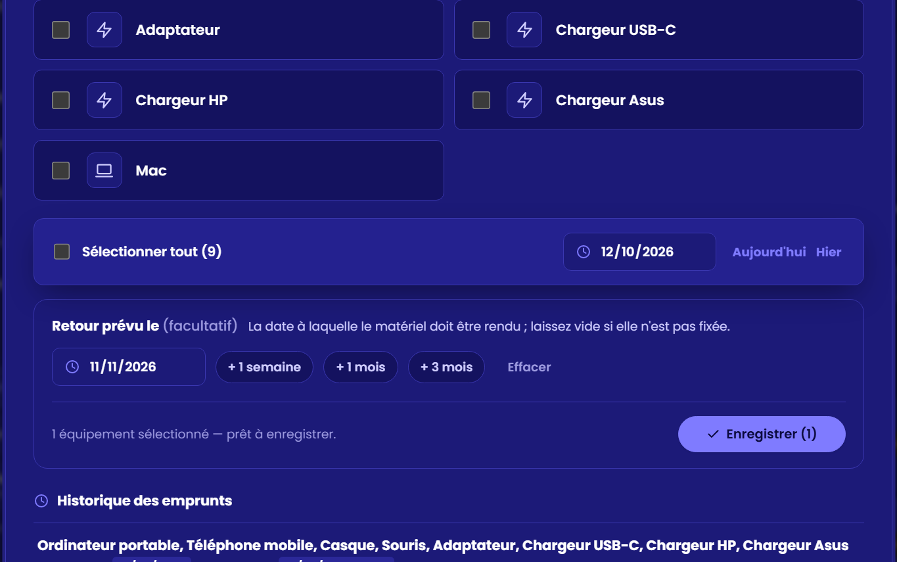
Figure 31 — Fiche d'emprunt : carte « Retour prévu le (facultatif) », pastilles et bouton Enregistrer
Les alertes
Figure 32 — Fenêtre d'alerte à l'ouverture de l'application
Alerte
Comportement
Fenêtre
À l'ouverture (puis toutes les 30 minutes ou au retour sur l'onglet) si du matériel n'a pas été rendu à la date prévue : personnes concernées (6 au plus), équipements et jours de retard. Voir les retards ouvre Restituer filtré ; Plus tard la ferme. Elle ne revient pas plus d'une fois par jour, sauf si le nombre d'équipements en retard augmente, et jamais par-dessus une autre fenêtre.
Accueil
Carte rouge « Retours en retard », phrase de situation, « dont N en retard » sur Matériel à restituer, segment violet « Retour en retard » dans le parc et dans chaque type (§ 4.1).
Menu
Pastille de Restituer en rouge (info-bulle « N équipements à rendre en retard ») ; la pastille d'Accueil compte aussi les personnes en retard.
Restituer
Filtre « En retard de retour » ; personnes en retard en tête du tri par priorité ; repère rouge sur la ligne.
LimiteL'application n'envoie aucune notification : l'alerte n'apparaît que lorsque quelqu'un ouvre GPIEXALT. Être prévenu sans ouvrir l'application demanderait une tâche planifiée (risque R-19).
4.22 Actions groupées sur les attestations
Objectif : traiter plusieurs attestations d'un coup, par exemple après réception d'un lot de signatures papier.
Figure 33 — Attestations : cases à cocher et barre d'actions groupées
Élément
Comportement
Sélection
Une case par ligne ; « Sélectionner toutes les attestations en attente de cette liste » (suit la recherche, les filtres et la période).
Barre d'actions
Fixe en bas de la liste dès qu'une ligne est cochée : « N sélectionnées · N en attente », Marquer N comme signées (rôles qui peuvent agir), Exporter la sélection (rôles autorisés aux exports), Désélectionner.
Marquer comme signées
Fenêtre avec la date de signature (aujourd'hui par défaut, jamais dans le futur) et une mention écrite obligatoire (140 caractères) : le bouton reste grisé tant qu'elle est vide. Chaque attestation passe à « Signée », son PDF signé est archivé avec la mention ; progression « Signature et archivage… k / n ». Aucun tracé n'est enregistré et aucun message n'est envoyé.
Exporter la sélection
Fichier attestations_selection_AAAA-MM-JJ.csv (colonnes en annexe A).
Figure 34 — Signature groupée : date et mention obligatoire
AnnulationContrairement à une signature individuelle, une signature groupée n'a pas de bouton Annuler dans le message de confirmation : le contrôle se fait avant, dans la fenêtre. Une correction passe par l'administrateur.
4.23 Scan rapide et panneau latéral
Scan rapide
Après un scan (caméra, photo ou saisie du code), le résultat propose l'action la plus probable (§ 4.11) :
Prêter maintenant (équipement disponible, rôle autorisé) : enregistre l'emprunt à la date du jour, sans date de retour prévue ; le message propose Annuler ; la caméra repart sur le QR suivant après un court instant.
Restituer ce matériel (équipement emprunté et non encore rendu) : ouvre Restituer avec l'équipement déjà coché ; l'envoi de l'attestation reste un clic de l'utilisateur.
Ouvrir la fiche ouvre Restituer si l'équipement est emprunté, Emprunter sinon.
Figure 35 — Scan rapide : « Prêter maintenant »
Panneau latéral sur grand écran
À partir de 1 480 px de large, la fiche d'une personne (Emprunter, Restituer) s'affiche dans un panneau à droite au lieu d'une fenêtre : la liste reste visible et cliquable. Un clic sur une autre personne change la fiche ; si du matériel est coché sans être enregistré, une confirmation « Abandonner la sélection ? » s'affiche. Sous 1 480 px, la fiche reste une fenêtre.
Figure 36 — Restituer sur grand écran : liste à gauche, fiche dans le panneau à droite
5. Règles de gestion
Réf.
Règle
RG-01
Un équipement ne peut être emprunté que s'il est disponible : jamais emprunté, ou redevenu libre (restitué et signé, ou déclaré perdu).
RG-02
Une attestation ne couvre que du matériel emprunté et non déjà couvert par une attestation en attente.
RG-03
Une attestation est créée au statut « En attente » ; elle passe à « Signée » uniquement par l'action « Marquer comme signée ».
RG-04
Le matériel d'une attestation signée est considéré comme restitué et redevient disponible.
RG-05
La date de signature ne peut pas être dans le futur ; elle est aujourd'hui par défaut.
RG-06
Une attestation en attente depuis 3 jours ou plus est « À relancer » (filtre, indicateurs, Accueil). Le bouton Relancer, masqué par défaut, trace chaque relance (nombre, dernière date, auteur) lorsqu'il est activé.
RG-07
Une relance utilise le canal de l'envoi initial (email ou téléphone).
RG-08
Une déclaration de perte, vol ou casse demande une confirmation et ne peut être ni modifiée ni supprimée.
RG-09
Un équipement déclaré perdu libère sa place et peut être remplacé par un nouvel emprunt.
RG-10
Chaque événement (prêt, attestation, relance, signature, perte, commentaire) conserve l'identifiant de son auteur et sa date.
RG-11
Le PDF signé archivé n'est pas recalculé : le téléchargement restitue le fichier stocké.
RG-12
Aucun message ne part sans action de l'utilisateur : le SMS est envoyé depuis l'appareil, l'email depuis Outlook ou, pour l'attestation signée et pour le rapport, par le bouton « Envoyer maintenant » d'une fenêtre qui affiche le destinataire, l'objet et le texte. L'application n'envoie jamais de notification toute seule.
RG-13
Un emprunt ou une signature qui vient d'être enregistré peut être annulé par le bouton Annuler du message de confirmation (10 secondes au moins), sauf si une autre action a été enregistrée depuis pour la même personne. Passé ce délai, la correction passe par un commentaire et l'administrateur.
RG-14
La validation d'une signature exige un tracé ou une mention écrite (140 caractères) ; la mention est conservée avec l'attestation, reproduite dans le PDF signé et supprimée si la signature est annulée.
RG-15
Un filtre de période ne modifie aucune donnée : il restreint l'affichage, les indicateurs et les exports de l'onglet concerné.
RG-16
Un code QR ne contient que l'identifiant de l'équipement ; son état (disponible, emprunté, perdu) est toujours lu dans l'application au moment du scan.
RG-17
Chaque personne a un rôle : Administrateur full, Super utilisateur, Agent IT, Lecteur ou Collaborateur. Sans rôle attribué, une personne qui peut modifier est administrateur, une personne qui peut interagir est super utilisateur, une personne qui peut seulement consulter est collaborateur.
RG-18
Un collaborateur ne voit que sa propre fiche, en consultation seule ; la base refuse l'accès aux autres fiches. Il n'effectue aucune saisie ni signature.
RG-19
Les rapports PDF et Excel et les exports CSV sont réservés aux administrateurs, aux super utilisateurs et aux lecteurs. La déclaration de perte est réservée aux administrateurs et aux super utilisateurs.
RG-20
Fermer une fiche ou changer de personne alors que du matériel est coché sans être enregistré demande une confirmation.
RG-21
Les personnes d'Emprunter et Restituer viennent de l'annuaire importé depuis Microsoft 365 par un administrateur (tout l'annuaire, une sélection ou un groupe) ; sans import, 15 personnes de démonstration sont proposées. Chaque personne importée reçoit le kit standard de 9 équipements.
RG-22
Une synchronisation de l'annuaire conserve l'identifiant, le code et les emprunts de chaque personne ; un compte retiré de l'annuaire reste listé ; un import par sélection ou par groupe ne propose plus les autres personnes mais conserve leurs données.
RG-23
Un import par groupe est refusé au-delà de 999 membres ; seuls les comptes actifs, de type membre, avec une adresse email sont importés.
RG-24
L'envoi de l'attestation signée demande une confirmation ; la date d'envoi est tracée sur l'attestation ; l'objet et le texte sont modifiables avant l'envoi.
RG-25
La date de retour prévue d'un emprunt est facultative et ne peut pas précéder la date de remise. Un équipement non rendu dont la date prévue est dépassée est « en retard ».
RG-26
Les retards sont signalés par une fenêtre d'alerte à l'ouverture (au plus une fois par jour, ou si leur nombre augmente), la carte « Retours en retard » et la phrase de situation de l'Accueil, les pastilles rouges du menu et le filtre « En retard de retour ». Aucune notification n'est envoyée à l'extérieur.
RG-27
La signature groupée exige une date (jamais dans le futur) et une mention écrite ; elle archive un PDF signé par attestation et n'envoie aucun message.
RG-28
Un rapport peut être envoyé par email à 10 adresses au plus, saisies à la main ou choisies parmi les suggestions ; l'envoi n'a lieu qu'après un clic sur « Envoyer maintenant » ; au-delà de 2,9 Mo, l'envoi direct est refusé.
RG-29
Le message d'une attestation de restitution est adressé à l'adresse de la fiche ou à une adresse saisie à la main ; cette adresse est conservée avec l'attestation et reprise pour la relance et pour le message d'attestation signée.
RG-30
Le contenu d'un rapport dépend de la page d'où il est demandé (Accueil : rapport complet) ; la période s'applique à l'activité de la page, les situations sont celles du jour.
6. Procédures opérationnelles
P1 — Prêter du matériel
N°
Action
Résultat attendu
1
Onglet Emprunter : rechercher la personne et ouvrir sa fiche.
La fiche s'ouvre avec le matériel disponible.
2
Cocher les équipements remis (quantité si besoin) ; contrôler la date ; si besoin, renseigner « Retour prévu le » (facultatif).
Sélection visible, bouton Enregistrer actif.
3
Cliquer sur Enregistrer.
Message de confirmation (avec la date de retour prévue) ; équipements dans « Matériel actuellement emprunté ».
P2 — Enregistrer une restitution et envoyer l'attestation
N°
Action
Résultat attendu
1
Onglet Restituer : ouvrir la fiche de la personne, cocher le matériel rendu, choisir la date de retour.
Boutons d'envoi actifs.
2
Cliquer sur Par email ; dans l'aperçu, choisir le destinataire (adresse enregistrée ou autre adresse saisie à la main), puis Continuer et envoyer. Ou cliquer sur Par téléphone.
Attestation « En attente » créée ; brouillon Outlook avec PDF adressé au destinataire choisi (ou SMS prêt).
3
Relire puis envoyer le message dans Outlook (ou l'application SMS).
Message envoyé à la personne.
P3 — Suivre et relancer les attestations non signées
N°
Action
Résultat attendu
1
Accueil (phrase de situation et pastille du menu) ou onglet Attestations, filtre À relancer.
Liste des attestations en attente depuis 3 jours ou plus.
2
Contacter la personne (email ou téléphone) ; si le bouton Relancer est activé, l'utiliser pour préparer le message.
Message de rappel prêt ; relance tracée si le bouton est utilisé.
P4 — Enregistrer la signature et archiver le PDF
N°
Action
Résultat attendu
1
À réception de l'attestation signée, cliquer sur Marquer comme signée.
Fenêtre de date.
2
Contrôler la date de signature (modifier si la signature est antérieure). Faire signer au doigt ou au stylet ; si quelqu'un signe à la place de la personne, l'écrire dans Mention écrite (un tracé ou une mention est obligatoire). Puis Valider la signature.
« Signée le … » ; message « PDF archivé » avec bouton Annuler (10 s).
3
Dans la fenêtre Envoyer l'attestation signée ?, contrôler le destinataire et le texte (Modifier si besoin), puis Envoyer maintenant (ou Créer un brouillon, ou Ne pas envoyer).
Message envoyé avec le PDF signé joint ; date d'envoi tracée.
4
Vérifier dans Archives PDF que la ligne est « Archivé ».
Bouton Télécharger disponible.
P5 — Déclarer une perte, un vol ou une casse
N°
Action
Résultat attendu
1
Onglet Restituer : cocher le matériel concerné.
Boutons de déclaration actifs.
2
Cliquer sur Déclarer perdu / volé / abîmé et confirmer.
Déclaration enregistrée ; visible dans Matériel perdu.
P6 — Fournir un PDF signé (audit ou litige)
N°
Action
Résultat attendu
1
Onglet Archives PDF : rechercher par nom, référence ou date.
Ligne de l'attestation.
2
Cliquer sur Télécharger.
PDF signé identique à celui produit à la signature.
P7 — Identifier un équipement par son QR
N°
Action
Résultat attendu
1
Cliquer sur Scanner un QR (bas du menu) et viser l'étiquette, ou saisir le code (ex. AP-1).
Équipement, personne concernée et état affichés.
2
Si l'équipement est disponible, Prêter maintenant ; s'il est emprunté, Restituer ce matériel (équipement déjà coché) ; sinon Ouvrir la fiche.
Prêt enregistré (avec Annuler) ou fiche de restitution ouverte.
P8 — Exporter un état. Dans Attestations ou Matériel perdu, appliquer recherche et filtres, puis Exporter CSV : le fichier contient exactement les lignes affichées.
P9 — Générer un rapport
N°
Action
Résultat attendu
1
Sur la page voulue (Accueil, Emprunter, Restituer, Attestations, Archives PDF ou Matériel perdu) : cliquer sur Rapport, en haut à droite.
Fenêtre du rapport de cette page.
2
Choisir la période d'activité et le format (PDF ou Excel), puis Générer le rapport et confirmer le téléchargement ; ou Envoyer par email : saisir ou choisir le destinataire, contrôler l'objet et le message, puis Envoyer maintenant (ou Créer un brouillon, ou Télécharger le message).
Fichier rapport_gpiexalt_<page>_AAAA-MM-JJ enregistré, ou message envoyé avec le rapport joint.
P10 — Attribuer un rôle ou rattacher un collaborateur
N°
Action
Résultat attendu
1
Partager la page avec la personne (Partager) : « Peut consulter » pour un collaborateur, « Peut interagir » pour un agent, un super utilisateur ou un lecteur.
La personne peut ouvrir l'application.
2
Rôles et accès : chercher la personne, choisir son rôle, enregistrer (ou choisir Tous les utilisateurs pour rattacher tous les collaborateurs).
Demander à la personne d'ouvrir la page ; contrôler son affichage (« Mon matériel » pour un collaborateur).
Vue conforme au rôle.
P11 — Importer l'annuaire Microsoft 365
N°
Action
Résultat attendu
1
Rôles et accès, carte « Annuaire Microsoft 365 » : pour un essai, ajouter quelques personnes (champ de recherche) ou choisir un petit groupe Entra ID ; sinon ne rien choisir.
Pastilles affichées ; le bouton indique ce qui sera importé.
2
Cliquer sur le bouton d'import, autoriser le connecteur Microsoft 365 au premier usage, puis Importer dans la fenêtre de confirmation.
Message « Annuaire importé : N personnes dans Emprunter et Restituer ».
3
Ouvrir Emprunter et vérifier la liste ; relancer l'import pour ajouter les arrivées.
Personnes réelles, kit standard, aucun emprunt.
P12 — Signer plusieurs attestations en une fois
N°
Action
Résultat attendu
1
Onglet Attestations : filtrer (par exemple « En attente »), cocher les lignes ou « Sélectionner toutes les attestations en attente de cette liste ».
Barre d'actions en bas de la liste.
2
Cliquer sur Marquer N comme signées, contrôler la date, saisir la mention (obligatoire, ex. « Signatures papier reçues le … »), puis Marquer comme signées.
Attestations « Signées », PDF archivés ; aucun message envoyé.
P13 — Traiter un retour en retard
N°
Action
Résultat attendu
1
À l'alerte d'ouverture, cliquer sur Voir les retards (ou Accueil, carte « Retours en retard », ou Restituer, filtre « En retard de retour »).
Personnes dont la date prévue est dépassée, en tête de liste.
2
Contacter la personne, puis enregistrer la restitution (P2) ou, si le matériel est perdu, la déclaration (P5).
L'équipement sort du suivi des retards.
7. Architecture, données et sécurité
7.1 Architecture et dépendances
Composant
Description
Application
Page web unique (HTML, CSS, JavaScript), publiée par Claude à une adresse fixe ; chaque modification crée une version numérotée.
Base de l'application
Base de documents hébergée avec l'application ; collections people, documents, directory, roles, links et mine (§ 7.2).
jsPDF 2.5.1
Bibliothèque de création de PDF, chargée depuis cdnjs.cloudflare.com au premier usage. Dépendance externe : si l'accès est bloqué (proxy, pare-feu), la création de PDF échoue avec un message explicite.
pdf.js 3.11.174
Affichage de l'aperçu du PDF avant envoi ; chargé depuis cdnjs.cloudflare.com à la demande.
QR : qrcode-generator 1.4.4, jsQR 1.4.0
Dessin des étiquettes QR (cdnjs.cloudflare.com) et lecture par la caméra ou une photo (cdn.jsdelivr.net) ; chargés à la demande. La caméra n'est utilisée que pendant le scan et jamais enregistrée.
ExcelJS 4.4.0, jspdf-autotable 3.8.2
Génération du classeur Excel et des tableaux du rapport PDF ; chargées à la demande depuis cdnjs.cloudflare.com.
Police Poppins (Google Fonts)
Police des thèmes eXalt, chargée depuis fonts.googleapis.com ; si l'accès est bloqué, une police système la remplace sans autre effet. À faire valider par le RSSI comme les autres dépendances externes.
Préférences d'affichage
Thème, couleur d'accent et densité : mémorisés dans le navigateur (localStorage), jamais envoyés à la base.
Connecteur Microsoft 365
Autorisé par chaque utilisateur ; les appels utilisent ses propres droits et la page ne voit jamais les jetons d'accès. Opérations utilisées : lecture des utilisateurs et des groupes (list-users, list-groups, list-group-members), création de brouillon (create-draft-email) et envoi (send-mail). Aucune écriture dans Entra ID.
Annuaire et catalogue
15 personnes de démonstration intégrées au code, remplacées par l'annuaire Entra ID importé (§ 4.19). Le matériel de chaque personne est un kit standard de 9 équipements : le parc réel (Intune) n'est pas encore connecté.
Un document par attestation signée : personId, attId, filename, signedAt, signedBy, signNote, size, pdf (PDF en base64, de 6 à 15 Ko selon la signature tracée).
roles/{compte}
Un document par personne ayant un rôle attribué : role (admin, super, agent, reader, collab) et personId (fiche rattachée, pour un collaborateur).
links/{fiche}
Un document par fiche rattachée : uid (compte du collaborateur).
directory/meta, directory/chunk-N
meta : count, mode (all ou selection), group, chunks, nextId, syncedAt, by. chunk-N : lots de 120 personnes users[] (k : identifiant Entra ID, id : numéro stable, code, name, role, email, phone, active, scope).
mine/{compte}
Résumé personnel d'un collaborateur : matériel et états, prêts, attestations, pertes, date de mise à jour. Recalculé à chaque action sur la fiche.
Les auteurs sont référencés par leur identifiant (jamais par leur nom) ; les noms sont résolus à l'affichage. Une personne n'a de document qu'à partir de sa première action. Limite de la base : 256 Ko par document.
7.3 Accès, authentification et traçabilité
Sujet
Fonctionnement
Accès
L'application est partagée avec des personnes désignées de l'organisation ; les autres ne peuvent pas ouvrir le lien. Le partage se gère depuis le menu de partage de la page publiée.
Identité de l'utilisateur
Fournie par la plateforme (nom affiché, identifiant) ; utilisée pour tracer les actions.
Droits
Cinq rôles (§ 4.17), combinés au niveau de partage. Règles d'accès de la base : people et documents lisibles et modifiables à partir du niveau « interagir » ; roles réservé aux administrateurs (chacun lit le sien) ; links modifiable par les administrateurs ; mine lisible par chaque collaborateur pour sa seule fiche ; directory lisible et modifiable à partir du niveau « interagir » (seule l'interface limite l'import aux administrateurs).
Traçabilité
Chaque prêt, attestation, relance, signature, déclaration et commentaire garde l'auteur et la date ; l'historique de chaque personne est consultable dans sa fiche ; les PDF signés sont conservés tels que produits.
Connecteur Microsoft 365
Consentement demandé à chaque utilisateur au premier usage ; l'autorisation empêche de rendre la page publique. Le connecteur permet aussi d'envoyer des messages : l'envoi de l'attestation signée exige un clic sur « Envoyer maintenant ».
7.4 Données personnelles
Rubrique
Description
Personnes concernées
Collaborateurs et consultants détenteurs de matériel ; utilisateurs de l'application (auteurs des actions).
Données traitées
Nom, fonction ou service, adresse email, numéro de mobile (copiés depuis Entra ID à l'import de l'annuaire) ; adresse email saisie à la main pour l'envoi d'une attestation (personnelle ou externe, conservée avec l'attestation) ; matériel détenu, dates de prêt et de restitution ; signatures déclarées (y compris l'image d'une signature tracée, uniquement dans le PDF) et mentions de signature ; commentaires ; identifiant des auteurs ; PDF d'attestation (qui reprend ces données).
Finalité
Gestion du parc de matériel, preuve de restitution, suivi des pertes.
Base légale
À renseigner par le DPO (intérêt légitime de l'employeur ou obligation contractuelle, à confirmer).
Accès
Personnes avec lesquelles l'application est partagée ; l'annuaire importé est lisible par toutes ces personnes.
Hébergement
Base hébergée avec l'application par la plateforme Claude ; localisation et sous-traitants à confirmer par le RSSI / le DPO.
Durée de conservation
À définir. Aucune purge automatique n'existe : les données restent tant qu'elles ne sont pas supprimées par l'administrateur.
Droits des personnes
Accès, rectification, effacement : traités par l'administrateur sur demande, la suppression se faisant directement dans la base.
Données sensibles
Aucune donnée sensible au sens du RGPD n'est collectée.
7.5 Recommandations de sécurité
Limiter le partage de l'application au strict nécessaire, attribuer à chacun le rôle le plus restreint qui suffit, et revoir la liste « Rôles et accès » chaque trimestre.
Faire valider par le RSSI le chargement de jsPDF, jspdf-autotable, ExcelJS, pdf.js et qrcode-generator depuis cdnjs.cloudflare.com, de jsQR depuis cdn.jsdelivr.net et de la police Poppins depuis fonts.googleapis.com ; héberger ces bibliothèques en interne si la politique l'exige.
Définir et appliquer une durée de conservation des attestations et des déclarations.
Ne pas saisir d'information sensible dans les commentaires ni dans la mention de signature (visibles de tous les utilisateurs et reproduites dans le PDF).
Contrôler les droits du connecteur Microsoft 365 autorisé (lecture de l'annuaire, brouillons et envoi de messages) et en documenter la revue ; valider avec le DPO l'import de l'annuaire (données de tous les collaborateurs) et préférer une sélection ou un groupe pour les essais.
Prévoir un export périodique (CSV et PDF) en l'absence de sauvegarde externe automatique.
8. Sauvegarde, continuité et reprise
8.1 Enregistrement des données
Chaque action est enregistrée immédiatement dans la base de l'application. Un message de confirmation s'affiche et la pastille en bas du menu indique Synchronisé à HH:MM.
8.2 Protection contre les écrasements
Avant chaque enregistrement, l'application relit la dernière version de la personne dans la base.
Elle applique la modification de l'utilisateur par-dessus cette version.
Elle enregistre le résultat.
Deux utilisateurs travaillant sur des personnes différentes ne se gênent jamais. Sur la même personne au même instant, la dernière écriture l'emporte mais conserve le contenu relu juste avant.
8.3 Chargement à l'ouverture
L'annuaire importé est lu en premier, puis une seule requête charge toutes les personnes qui ont un historique (jusqu'à 1 000, puis des lectures complémentaires par lots). L'ouverture de l'application n'écrit aucune donnée. Les listes affichent 50 lignes à la fois.
8.4 Cas d'échec
Situation
Comportement et action
Enregistrement au-delà de 6 secondes
L'action est abandonnée pour ne pas bloquer l'écran ; la pastille passe à Mode local ; l'action n'est pas conservée. Recharger la page et recommencer.
Erreur d'enregistrement
Un message rouge « Enregistrement impossible : … » donne la raison (refus de la base, erreur interne) ; la modification n'est pas conservée. L'aide (touche ?) affiche un diagnostic à transmettre au support.
Base injoignable à l'ouverture
Même état « Mode local » : rien n'est conservé. Vérifier la connexion et rouvrir le lien de l'application.
Fichier local ouvert hors de Claude
Aucune base : toutes les données sont perdues à la fermeture. Réservé aux démonstrations.
Archivage du PDF échoué
Signature conservée ; relancer avec « Archiver le PDF ».
8.5 Sauvegarde de secours et restauration
Élément
État
Exports CSV
Attestations et matériel perdu : copies lisibles dans Excel.
PDF signés
Téléchargeables un par un depuis Archives PDF.
Sauvegarde automatique externe
Non disponible. Un export complet régulier est à prévoir avant la mise en production à grande échelle.
Objectifs de reprise (RPO / RTO)
À définir par la DSI ; aucun engagement n'est pris par l'application.
Retour à une version de l'application
Possible via l'historique des versions de la page publiée ; les données ne sont pas modifiées par un retour de version.
9. Exploitation et maintenance
9.1 Gestion des versions
Chaque modification publie une nouvelle version numérotée à la même adresse ; les utilisateurs la voient au rechargement.
Les données sont conservées d'une version à l'autre.
L'historique des versions permet un retour en arrière.
9.2 Procédure de changement (proposée)
N°
Étape
Description
1
Demande
Besoin exprimé par le service informatique ; validation par la DSI.
2
Développement
Modification de l'application par l'administrateur.
3
Test local
Vérification sur une copie locale (flux concernés et affichage PC, tablette, téléphone).
4
Recette
Exécution des cas du chapitre 10 concernés.
5
Publication
Nouvelle version publiée ; numéro noté dans le journal des révisions.
6
Documentation
Mise à jour de ce dossier et de la présentation (demande « mets à jour la documentation »).
La documentation ne se met pas à jour automatiquementÀ chaque évolution, l'administrateur demande la mise à jour : les sections concernées sont ajustées, la version du document est incrémentée, le PDF et la présentation sont régénérés.
9.3 Réglages dans le code
Réglage
Valeur actuelle
Effet
REMINDER_AFTER_DAYS
3
Délai avant qu'une attestation en attente soit « À relancer ».
SMS_TEST_NUMBER
06 95 17 58 74
Numéro de destination de tous les SMS ; à désactiver pour utiliser le numéro de chaque fiche.
PAGE_SIZE
50
Nombre de lignes affichées par liste avant « Afficher plus ».
SHOW_EQUIPMENT_SPECS
false
Affichage des caractéristiques (modèle, numéro de série) des équipements.
MAIL_SERVER
« MS 365 »
Nom du connecteur utilisé pour créer les brouillons Outlook.
LOCATION_OVERRIDE
null
Impose la ville et le pays affichés en haut à droite (ex. { city: "Paris", country: "France" }) ; sinon déduits du fuseau horaire et de la langue du navigateur.
SHOW_REMIND_BUTTON
false
Affichage du bouton Relancer dans Attestations et dans la fiche personne.
9.4 Surveillance courante
Contrôler la pastille de sauvegarde en bas du menu : « Synchronisé » = normal ; « Mode local » = à traiter.
Contrôler chaque semaine l'onglet Archives PDF, filtre « À archiver », et l'onglet Attestations, filtre « À relancer ».
Contrôler à chaque évolution l'affichage sur téléphone et tablette, et les principaux thèmes.
Consulter l'Accueil chaque matin : la fenêtre d'alerte, la carte « Retours en retard » et le bandeau « PDF à archiver » résument les actions à traiter.
10. Plan de recette
État au 12/10/2026. « Local » : essai réalisé sur une copie locale de l'application. « Production » : essai à réaliser sur l'application publiée, avec la base et les connecteurs réels.
Réf.
Fonction
Scénario
Résultat attendu
Local
Production
CR-01
Emprunter
Cocher 2 équipements, choisir une date, enregistrer.
Prêt dans l'historique ; équipements « empruntés ».
À faire
À faire
CR-02
Restituer
Sélectionner tout le matériel, cliquer sur « Par téléphone ».
Attestation « En attente » ; SMS préparé vers le numéro de test.
À faire
À faire
CR-03
Restituer
Déclarer un équipement perdu (avec confirmation).
Déclaration dans la fiche et dans Matériel perdu.
À faire
À faire
CR-04
Relance
Filtre « À relancer », bouton Relancer sur un envoi par email puis par téléphone.
Message de rappel adapté au canal ; relance tracée.
OK
À faire
CR-05
Signature
« Marquer comme signée » avec la date du jour.
Statut « Signée » ; message « PDF archivé ».
OK
À faire
CR-06
Signature
Idem avec une date passée (02/10/2026).
PDF « Signée le 02/10/2026, enregistrée le … ».
OK
À faire
CR-07
Signature
Annuler dans la fenêtre de date.
Aucun changement.
OK
À faire
CR-08
PDF
Télécharger le PDF d'une attestation signée.
Une page ; date et nom du collaborateur ; date et « DSI » côté IT.
OK
À faire
CR-09
PDF
PDF d'une attestation de 8 équipements.
Reste sur une page.
OK
À faire
CR-10
Archives
Rechercher une attestation par référence ou date ; télécharger.
Ligne trouvée ; PDF identique à celui de la signature.
OK
À faire
CR-11
Archives
« Archiver le PDF » sur une ancienne attestation signée.
Ligne « Archivé » ; compteurs mis à jour.
OK
À faire
CR-12
Outlook
« Par email » avec le connecteur Microsoft 365 autorisé.
Brouillon dans Outlook, PDF joint, destinataire correct.
Simulé
Prioritaire
CR-13
Outlook
« Par email » connecteur refusé ou absent.
PDF téléchargé ; lien d'ouverture du message ; raison affichée.
OK
À faire
CR-14
Sauvegarde
Enregistrer une action, recharger la page.
Données conservées ; pastille « Synchronisé ».
N/A
Prioritaire
CR-15
Sauvegarde
Deux utilisateurs agissent sur deux personnes différentes.
Aucune perte de donnée.
N/A
À faire
CR-16
Exports
Exporter les attestations filtrées en CSV.
Fichier avec les seules lignes affichées.
À faire
À faire
CR-17
Mobile
Parcourir les 7 onglets à 375 px et 768 px.
Pas de défilement horizontal ; barre d'onglets en bas.
OK
À faire
CR-18
Accès
Ouvrir le lien avec un compte non autorisé.
Accès refusé.
N/A
Prioritaire
CR-19
Accueil
Ouvrir l'Accueil ; cliquer sur « Retours en retard » (s'il y en a), puis sur « PDF à archiver ».
Onglets ouverts avec le bon filtre ; chiffres cohérents avec les listes.
OK
À faire
CR-20
Période
Filtrer Attestations « entre deux dates », puis « de mois à mois ».
Liste, indicateurs et export limités à la période ; Réinitialiser rétablit tout.
À faire
À faire
CR-21
Signature
Marquer comme signée avec une signature tracée et une mention écrite.
PDF avec signature, mention sous la case et dans le bloc de suivi ; mention visible dans les listes.
OK
À faire
CR-22
Annulation
Cliquer sur Annuler dans le message après un emprunt, puis après une signature.
Emprunt supprimé ; attestation « En attente », archive et mention supprimées.
À faire
À faire
CR-23
Aperçu
« Par email » : contrôler l'aperçu, puis Continuer et envoyer.
PDF affiché ; brouillon créé après confirmation ; Retour ne change rien.
À faire
À faire
CR-24
QR
Télécharger les étiquettes d'une personne ; scanner une étiquette (caméra, photo, saisie).
PDF d'étiquettes ; équipement et état corrects.
À faire
À faire
CR-25
Apparence
Choisir un thème et une couleur d'accent, recharger la page.
Choix appliqué à tous les écrans et conservé au rechargement.
OK
À faire
CR-26
Recherche
Ctrl K, chercher une personne, un code d'équipement, une page ; fermer par la croix.
Résultats corrects ; ouverture de la fiche ou de la page.
OK
À faire
CR-27
Rapports
Générer un rapport PDF puis Excel, période « Toutes les dates » et « Entre deux dates ».
Fichiers conformes (3 pages PDF ; 8 feuilles Excel) ; période respectée.
OK
À faire
CR-28
Rôles
Attribuer un rôle Collaborateur (fiche rattachée automatiquement) puis « Tous les utilisateurs ».
Accès listés ; fiches rattachées ; bilan des fiches sans compte.
Simulé
Prioritaire
CR-29
Collaborateur
Ouvrir l'application avec un compte « Peut consulter » rattaché ; tenter d'ouvrir une autre fiche.
Seule la vue « Mon matériel » ; fiches des autres refusées par la base.
Simulé
Prioritaire
CR-30
Rôles
Agent IT : vérifier l'absence des rapports, exports et déclarations de perte ; Lecteur : absence de saisie.
Boutons masqués ; message de refus si l'action est déclenchée autrement.
OK
À faire
CR-31
Confort
Fiche suivante / précédente, confirmation avec sélection, dates rapides, tris Attestations et Archives.
Navigation correcte ; confirmation affichée ; tris conformes.
OK
À faire
CR-32
Impression
Imprimer l'onglet Attestations en thème sombre.
Page claire sans menu ni boutons.
OK
À faire
CR-33
Annuaire
Importer 3 personnes choisies (Rôles et accès), puis ouvrir Emprunter.
Seules ces 3 personnes sont proposées ; les autres restent en base.
Simulé
Prioritaire
CR-34
Annuaire
Importer tout l'annuaire (plus de 999 comptes), puis relancer après un arrivant et un départ.
Tous les comptes actifs membres avec email ; arrivant ajouté ; départ « compte retiré » ; emprunts conservés.
Simulé
Prioritaire
CR-35
Annuaire
Importer un petit groupe Entra ID ; essayer « Tous les utilisateurs ».
Membres importés ; groupe de 999 membres ou plus refusé avec message.
Simulé
À faire
CR-36
Signature
Valider sans tracé ni mention ; avec la mention pré-remplie non complétée.
Bouton grisé et message explicatif.
OK
À faire
CR-37
Message signé
Valider la signature, puis « Envoyer maintenant » (compte réel, destinataire de test).
Message reçu avec le PDF signé joint ; date d'envoi tracée.
Simulé
Prioritaire
CR-38
Message signé
Modifier l'objet et le texte ; créer un brouillon ; télécharger le .eml et l'ouvrir.
Brouillon et fichier conformes ; .eml ouvert dans Outlook.
Simulé
À faire
CR-39
Enregistrement
Enregistrer un second emprunt sur une personne déjà enregistrée ; cliquer sans équipement coché ; double clic.
Emprunt ajouté ; message clair ; pas de doublon.
OK
À faire
CR-40
Fiche
Rechercher une autre personne depuis la fiche, avec une sélection non enregistrée.
Confirmation affichée ; fiche choisie ouverte.
OK
À faire
CR-41
Retour prévu
Emprunter avec « + 1 mois » ; essayer une date antérieure ; enregistrer sans date.
Date conservée et rappelée ; date antérieure refusée ; emprunt sans échéance possible.
OK
À faire
CR-42
Alerte retard
Enregistrer un emprunt dont la date prévue est passée ; rouvrir l'application.
Fenêtre d'alerte ; carte rouge, pastilles, filtre « En retard de retour » ; segment violet dans le parc.
OK
À faire
CR-43
Actions groupées
Cocher des attestations en attente ; signer sans mention, puis avec mention.
Bouton grisé sans mention ; attestations signées, PDF archivés, aucun message envoyé.
OK
À faire
CR-44
Actions groupées
« Exporter la sélection » (CSV).
Fichier avec les seules lignes cochées.
À faire
À faire
CR-45
Scan rapide
Scanner (saisie) un équipement disponible puis un équipement emprunté ; « Prêter maintenant », « Restituer ce matériel ».
Prêt enregistré (Annuler possible) ; Restituer ouvert avec l'équipement coché.
OK
À faire
CR-46
Panneau latéral
Écran de 1 480 px ou plus : ouvrir une fiche, changer de personne avec une sélection.
Fiche à droite, liste visible ; confirmation avant d'abandonner la sélection.
OK
À faire
CR-47
Rapport par email
Saisir une adresse invalide, puis une valeur valide ; « Envoyer maintenant », « Créer un brouillon », « Télécharger le message ».
Adresse invalide refusée ; message reçu avec le rapport joint ; brouillon et .eml conformes.
Simulé
Prioritaire
CR-48
Destinataire
Restituer « Par email » avec une autre adresse saisie à la main.
Brouillon adressé à cette adresse ; historique « Envoyée par email à … ».
Simulé
Prioritaire
CR-49
Recherche rapide
Ctrl K : liste de départ, recherche d'une personne, Entrée puis Maj + Entrée.
« À traiter » chiffré ; une ligne par personne ; les deux actions s'ouvrent.
OK
À faire
CR-50
Thème eXalt
Choisir « eXalt nuit » ; télécharger le PDF d'une attestation.
Police Poppins, accent eXalt, logo dans le menu et sur le PDF.
OK
À faire
CR-51
Rôles
Chercher « prénom nom », « nom prénom » et un début de mots dans Rôles et accès.
Nom complet affiché, même personne trouvée.
Simulé
Prioritaire
CR-52
Rapport par page
Cliquer sur « Rapport » dans Emprunter, Restituer, Attestations, Archives PDF et Matériel perdu ; générer le PDF et l'Excel.
Titre, sections et nom de fichier propres à chaque page ; Restituer liste les retards.
OK
À faire
11. Registre des risques et limites
Réf.
Risque
Niveau
Mesure / état
R-01
Données non conservées si la base est injoignable
Moyen
Pastille « Mode local » ; action à refaire ; export CSV régulier recommandé.
R-02
Signature enregistrée par erreur
Faible
Fenêtre de confirmation de date ; bouton Annuler pendant 10 secondes ; au-delà, correction par l'administrateur.
R-03
Accès par une personne non autorisée
Moyen
Partage limité à des personnes désignées ; revue trimestrielle des accès.
R-04
Rôles Agent IT et Lecteur appliqués à l'affichage seulement
Moyen
Seul « Peut consulter » interdit techniquement l'écriture ; rôles réels via groupes Entra ID prévus.
R-05
Dépendance aux CDN (jsPDF, pdf.js, QR : PDF, aperçu, étiquettes et scanner indisponibles si bloqués)
Moyen
Message explicite ; hébergement interne des bibliothèques à étudier.
R-06
Parc réel non connecté : chaque personne importée reçoit un kit standard de 9 équipements
Élevé
Choisir la source du parc (Intune, SharePoint ou Excel) avant l'usage à 1 500 collaborateurs ; l'annuaire Entra ID est déjà importable (§ 4.19).
R-07
Brouillon et envoi Outlook non éprouvés avec un compte réel
Moyen
Cas CR-12 et CR-37 prioritaires ; fichier .eml en repli.
R-08
SMS adressés à un numéro de test
Moyen
À désactiver avant l'usage réel (SMS_TEST_NUMBER).
R-09
Pas de durée de conservation ni de purge
Moyen
Durée à définir avec le DPO ; purge à développer.
R-10
Pas de sauvegarde externe automatique
Moyen
Export complet périodique à mettre en place.
R-12
Mention de signature en texte libre (informations sensibles, propos inadaptés)
Le suivi indique qui a validé et quand ; recours à une signature électronique à étudier si exigé.
R-13
Recherche de personnes limitée aux membres ayant un compte Claude (12 résultats au plus)
Moyen
Message explicite ; rattachement par identifiant copié sur l'écran du collaborateur ; connexion Entra ID prévue.
R-14
Résumés « Mon matériel » à tenir à jour (rattachement par fiche)
Faible
Mise à jour à chaque action d'un agent ; résumé créé dès le rattachement ; relancer « Tous les utilisateurs » pour les nouvelles fiches.
R-15
Annuaire importé : données personnelles de tous les collaborateurs lisibles par toute personne qui peut utiliser la page
Moyen
Validation du DPO ; essais sur une sélection ou un groupe ; règle de lecture réservée aux administrateurs à ajouter avant le déploiement.
R-16
Message envoyé à un mauvais destinataire ou au texte inadapté
Faible
Fenêtre de confirmation montrant destinataire, objet et texte ; texte modifiable ; brouillon possible.
R-17
Outlook sur le web non ouvrable depuis la page (navigateur)
Faible
Brouillon dans Outlook et fichier .eml proposés (§ 4.13).
R-18
Import limité à 999 comptes par lecture et par groupe
Faible
Lecture par tranches pour tout l'annuaire ; message pour un groupe trop grand.
R-19
Alertes de retard visibles seulement à l'ouverture de l'application (aucune notification automatique)
Moyen
Fenêtre d'alerte, carte et pastilles rouges ; tâche planifiée à étudier pour prévenir sans ouverture.
R-20
Adresse saisie à la main erronée ou non vérifiée (attestation, rapport)
Faible
Format contrôlé, destinataire affiché avant l'envoi ; l'existence de l'adresse n'est pas vérifiée.
R-21
Police Poppins chargée depuis Google Fonts
Faible
Police système en repli ; hébergement interne possible.
R-22
Rapport trop volumineux pour l'envoi direct (plus de 2,9 Mo)
Faible
Message explicite ; téléchargement puis jonction manuelle.
R-23
Recherche de personnes de « Rôles et accès » dépendante du moteur de la plateforme
Faible
Recherche par mots et début de nom ; identifiant copiable en dernier recours ; cas CR-51 à confirmer en production.
Évolutions envisagées
Évolution
Description
Annuaire et parc réels
Parc réel : source à choisir (Intune, SharePoint ou Excel) ; l'annuaire Entra ID est déjà importable (§ 4.19).
Envoi direct
Envoi automatique sans confirmation : non retenu ; l'envoi de l'attestation signée se fait par un clic dans une fenêtre de confirmation (§ 4.20).
Rôles et droits réels
Rôles issus de groupes Entra ID, séparation des données par collaborateur côté serveur, signature par le collaborateur sur son propre appareil.
Départs à venir
Date de départ par collaborateur et alerte si du matériel est encore dehors.
Notification des retards
Prévenir sans ouvrir l'application (tâche planifiée) : à étudier (R-19).
Purge, export complet
Purge selon la durée de conservation, export intégral des données ; annulation étendue au-delà du message de confirmation.
12. Support et escalade
Niveau
Qui
Rôle
Niveau 1
Référent de l'application — À renseigner
Premier contact des utilisateurs ; applique le chapitre 13.
Niveau 2
Administrateur de l'application — À renseigner
Corrections, publication d'une version, réglages, accès, connecteurs.
Niveau 3
DSI / RSSI — À renseigner
Décisions de sécurité, données personnelles, incidents majeurs.
Informations à fournir lors d'un incident
Date et heure, nom de la personne et référence de l'attestation concernée (ATT-…).
Action tentée et message affiché (copier le texte de la bulle en bas à droite).
Appareil et navigateur ; état de la pastille de sauvegarde (« Synchronisé » ou « Mode local »).
Ligne « Diagnostic » de l'aide (touche ?) : version, rôle, état de la base, erreurs récentes.
Capture d'écran si possible.
À renseigner avant l'approbationLes noms et moyens de contact des trois niveaux de support doivent être complétés par la DSI.
13. Questions fréquentes
Question
Réponse
La pastille indique « Mode local ».
La base est injoignable ou la page est un fichier local. Recharger depuis le lien de l'application ; les actions faites en mode local ne sont pas conservées.
Je n'ai pas les mêmes données qu'un collègue.
Recharger la page : les données sont chargées à l'ouverture.
Le brouillon Outlook ne se crée pas.
Vérifier que le connecteur Microsoft 365 est connecté dans les paramètres de Claude et autorisé pour la page. Le fichier .eml proposé dans la fenêtre « Message prêt à envoyer » fonctionne dans tous les cas.
Le PDF d'une ancienne attestation signée n'est pas dans les archives.
Onglet Archives PDF, filtre « À archiver », bouton « Archiver le PDF ».
J'ai signé une attestation ou enregistré un emprunt par erreur.
Cliquer tout de suite sur Annuler dans le message de confirmation (10 secondes). Si le message a disparu, ajouter un commentaire sur la fiche et contacter l'administrateur (niveau 2).
Quelqu'un signe à la place du collaborateur.
Dans la fenêtre de signature, écrire la mention (« Je signe à la place de … ») : elle est reproduite dans le PDF et dans les listes.
Comment changer la couleur ou le fond de l'application ?
Bouton en bas du menu latéral (Thème) : choisir un thème et une couleur d'accent. Le choix est propre à votre navigateur.
Une personne ne voit pas « Mon matériel » ou voit « Compte non rattaché ».
Elle doit être partagée en « Peut consulter » et rattachée à sa fiche dans « Rôles et accès » (ou via « Tous les utilisateurs »). Si elle reste introuvable, elle copie l'identifiant affiché sur son écran et l'administrateur le colle dans le champ de recherche.
Je ne trouve pas une personne dans « Rôles et accès ».
La recherche ne retrouve que les membres de l'organisation qui ont un compte Claude, 12 résultats au plus ; saisir le prénom et le nom (ou le début), ou l'adresse email.
Où générer un rapport ?
Bouton « Rapport » en haut à droite de chaque page (Accueil, Emprunter, Restituer, Attestations, Archives PDF, Matériel perdu) : le rapport est celui de la page ; choisir la période et le format PDF ou Excel, puis « Générer le rapport » ou « Envoyer par email » (réservé aux administrateurs, super utilisateurs et lecteurs).
Comment envoyer un rapport par email ?
Rapport, choisir période et format, « Envoyer par email » : saisir le nom ou l'adresse du destinataire (suggestions), contrôler le message, puis « Envoyer maintenant ». Au-delà de 2,9 Mo : télécharger le rapport et le joindre à la main.
La personne n'a pas de compte eXalt : comment lui envoyer l'attestation ?
Dans l'aperçu de « Par email », choisir « Une autre adresse, saisie à la main » et taper son adresse personnelle ; elle est conservée avec l'attestation.
À quoi sert la date de retour prévue, et est-elle obligatoire ?
Elle indique quand le matériel doit revenir ; elle est facultative. Dépassée, elle déclenche l'alerte de retard (§ 4.21).
Comment être prévenu d'un retard ?
À l'ouverture, une fenêtre liste les retards (une fois par jour au plus) ; l'Accueil, les pastilles rouges et le filtre « En retard de retour » les rappellent. Rien n'est envoyé tout seul.
Comment signer plusieurs attestations d'un coup ?
Attestations : cocher les lignes, « Marquer N comme signées », saisir la mention obligatoire (§ 4.22).
Comment passer vite d'une personne à l'autre ?
Dans une fiche, les flèches à côté de la croix ou Alt ← / Alt →.
Je ne vois pas les collaborateurs de l'organisation dans Emprunter et Restituer.
L'annuaire doit être importé : Rôles et accès, carte « Annuaire Microsoft 365 », bouton d'import (§ 4.19). Sans import, 15 personnes de démonstration sont proposées.
Le groupe « Tous les utilisateurs » est refusé.
Il compte 999 membres ou plus, limite de lecture du connecteur : utiliser « Importer tout l'annuaire » ou un groupe plus petit.
Le bouton « Valider la signature » est grisé.
Tracer une signature dans le cadre ou écrire une mention ; compléter la mention pré-remplie (« Signé par … »).
Outlook ne s'ouvre pas après la signature ou « Par email ».
Outlook sur le web ne peut pas s'ouvrir depuis la page. Le message est dans le dossier Brouillons d'Outlook, ou télécharger le message pour Outlook (.eml) et l'ouvrir par double-clic.
« Enregistrer » ne fait rien.
Cocher d'abord du matériel (un message le dit). Si un message rouge « Enregistrement impossible » s'affiche, relever la ligne de diagnostic de l'aide (touche ?).
Où est passé le bouton Relancer ?
Il est masqué (réglage SHOW_REMIND_BUTTON). Les retards restent visibles dans le filtre « À relancer » et sur l'Accueil.
La création du PDF, l'aperçu, les étiquettes ou le scanner échouent.
Une bibliothèque n'a pas pu être chargée (réseau ou pare-feu bloquant cdnjs.cloudflare.com ou cdn.jsdelivr.net). Contacter le niveau 2.
Les relances partent-elles seules ?
Non : l'application ne contacte personne seule ; le bouton Relancer (masqué par défaut) ne fait que préparer un message.
Comment changer le délai de relance ?
Réglage REMINDER_AFTER_DAYS (3 jours) : demander la modification à l'administrateur.
Peut-on utiliser l'application sur téléphone ?
Oui : barre d'onglets en bas, boutons adaptés au tactile, signature au doigt ; les boutons email et SMS ouvrent les applications de l'appareil.
Annexes
A. Colonnes des exports CSV
Export
Colonnes
Attestations
Personne · Rôle · Email · Téléphone · Matériel · Canal · Envoyée le · Date de retour déclarée · Statut · Signée le · Enregistrée par · Signée par · Relances · Mention de signature
Matériel perdu
Matériel · Personne · Quantité · Motif · Déclaré par
Nom des fichiers : attestations_AAAA-MM-JJ.csv, attestations_selection_AAAA-MM-JJ.csv (sélection d'attestations) et materiel_perdu_AAAA-MM-JJ.csv ; rapports : rapport_gpiexalt_AAAA-MM-JJ.pdf et .xlsx pour l'Accueil (feuilles Excel : Synthèse, Par type, À traiter, Attestations, Signatures, Pertes, Emprunts, Par personne), et rapport_gpiexalt_emprunts|restitutions|attestations|archives|perdu_AAAA-MM-JJ pour les pages. Encodage UTF-8 avec marque d'ordre (lisible dans Excel).
B. Conventions de nommage
Objet
Convention
Référence d'attestation
ATT-<n° personne>-<n° attestation>, par exemple ATT-2-4
Fichier PDF
attestation_restitution_prenom-nom_ATT-2-4.pdf ; version signée : suffixe _signee
Étiquettes QR
etiquettes_qr_prenom-nom.pdf ; le QR contient l'identifiant de l'équipement (ex. AP-1)
Document d'archive
documents/ATT-2-4 dans la base
C. Messages types
Message
Texte
Email de restitution
Objet : « Restitution de matériel ». « Merci Monsieur/Madame d'avoir restitué le matériel suivant : [liste]. Vous trouverez ci-joint l'attestation de restitution. Cordialement, »
Email d'attestation signée
Objet : « Attestation de restitution de matériel signée ». « Bonjour [prénom], Vous trouverez ci-joint l'attestation de restitution signée le [date], concernant le matériel suivant : [liste]. Merci d'en conserver un exemplaire. Cordialement, » (modifiable avant l'envoi)
Email de rapport
Objet : « [titre du rapport] du [date] », par exemple « Rapport des restitutions du 12/10/2026 ». « Bonjour, Vous trouverez ci-joint le document « [titre du rapport] » (format [PDF ou Excel]), généré le [date]. Période : [période]. Cordialement, [nom] » (modifiable avant l'envoi)
Objet : « Rappel : attestation de restitution à signer ». « Bonjour, Sauf erreur de notre part, l'attestation de restitution du matériel suivant, envoyée le [date], n'a pas encore été signée : [liste]. Merci de bien vouloir la signer et nous la retourner dès que possible. Cordialement, »
SMS de relance
« Rappel : l'attestation de restitution du matériel ([liste]) envoyée le [date] n'est pas encore signée. Merci de la signer dès que possible. Cordialement, »
D. Raccourcis clavier et catalogue
Élément
Détail
Raccourcis
1 Accueil · 2 Emprunter · 3 Restituer · 4 Matériel perdu · 5 Attestations · 6 Archives PDF · 7 Activités récentes · Ctrl K recherche rapide (Maj + Entrée : autre action sur une personne) · / recherche dans la liste · Alt ←Alt → personne précédente ou suivante · ? aide clavier · Échap vider la recherche ou fermer une fenêtre
Types de matériel
Ordinateur portable · Mac · Téléphone mobile · Casque · Souris · Adaptateur · Chargeur USB-C · Chargeur HP · Chargeur Asus
Fin du document — DOC-GPIEXALT-001, version 7.0, 12/10/2026.